Fewer than 100 fluent speakers remain of the Nez Perce language. Every word matters. Every elder's voice is a bridge between generations.
From the notebook of Mary McCarty
A Nimíipuu tribal member who dedicated her life to preserving her language
Mary was lost to COVID-19. These pages — written in her own hand — are among the last physical records of her life's work. Every word she preserved is a gift to future generations.
Three pages of handwritten notes in fading blue ink — days of the week, numbers, pronouns, and verb forms in Nimíipuutímt.
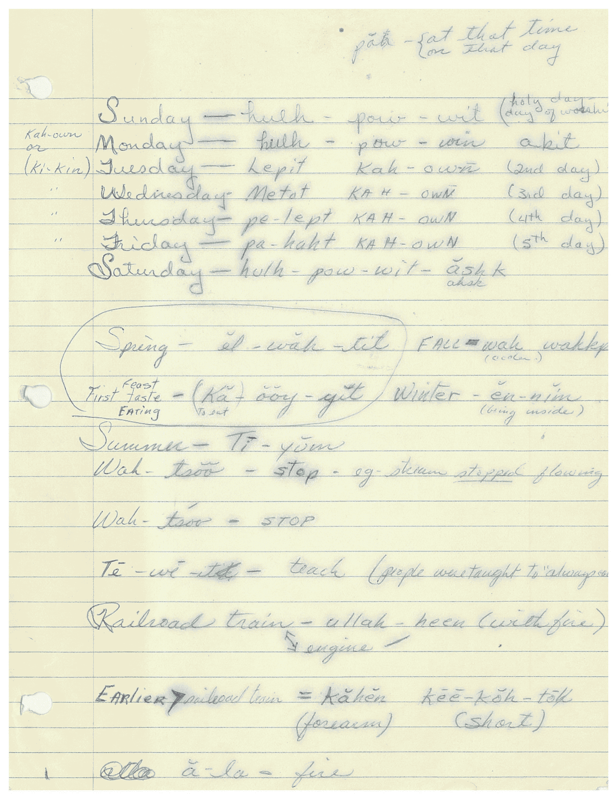
Note at top: "pa = at that time / on that day"
Sunday — hulk — pow — wot (holy day)
kahcom (ki-kia) Monday — hulk — pow — wos — ahat
Tuesday — lepit kah-owt (2nd day)
Wednesday — metot kah — owt (3rd day)
Thursday — pe-lept kah — owl (4th day)
Friday — pa-haht kah-owN (5th day)
Saturday — hulk — pow — wil — apkk (close)
Spring — at — wah — thl
Fall — wah wahky (autumn)
Front / First taste — (ka + ooy — opt) eating / frost
Winter — an — nim (very middle)
Summer — ti — yom
Wah — taot — stop; e.g. human or just standing
Wah — taor — stop
Te — wi — thl — track (people not taught to always [unclear])
Railroad train — aMah — heen (with fire) / engine
Earlier / railroad term — kahten
kee — poh — tsh (forearm) (short)
etta a — la — fire
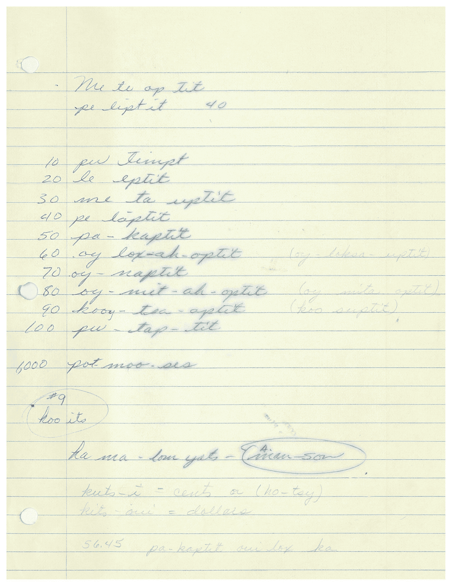
Note at top: "Me le op tit / pe lept it — 40"
10 — pu-timpt
20 — le — eptit
30 — moe — ta — eptit
40 — pe loptit
50 — pa — kaptit
60 — oy lovah-optit (oy [unclear] eptit)
70 — oy — naptit
80 — oy — mit — ah — optit (oy mita optit)
90 — kooy — tsa — optit (kooy eptit)
100 — pu — tap — tit
1000 — pot moo sis
09 / koc ite
ha ma — lon yato — Allun-son (circled)
huilu — o — cents or (No-tay)
Nilo mee — dollar
$645 — pa-kaptit [unclear] he
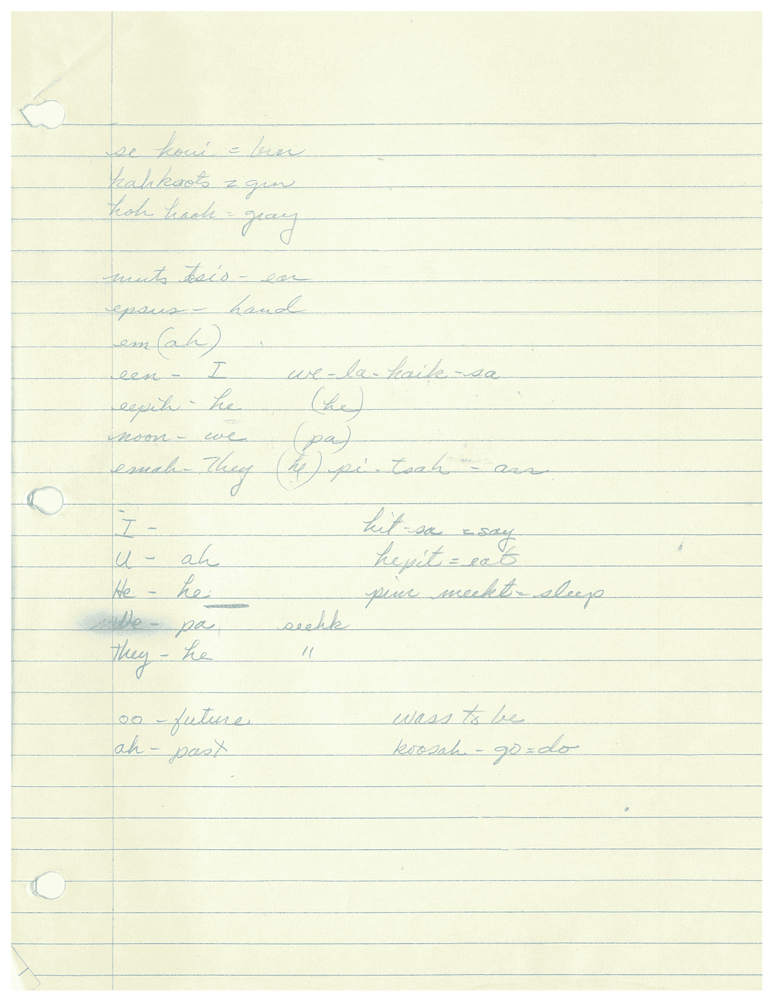
we have — hnew
hair / went — qew
koh-kooh — young
mute teis — ear
ipsuna — hands
em (ah)
een — I we — he hish — ne
epit — he (he)
moon — we (ya)
emah — They (it) pi-taah — our
I — hit me — eesy
U — ah hepite — so to
H — he pine meekle — always
We — pe meekle
They — he "
oo — future wees to be
ah — past mesah — go / do
46 pages of interviews, traditional stories, verb conjugations, and vocabulary — typed records from the early 1970s preserving the words and memories of Nez Perce elders.
Pages 1 – 24
Conversational interview about life near Spalding, Idaho — family, boarding school, churches, horses, and Talmaks camp.
Pages 25 – 27
Growing up along the Salmon River, family history, schooling, and the old Indian ways.
Pages 28 – 34
A tale of disobedient children by Almeda Stevens, a teaching story by Dorcas Miller, and an interview with V. Morris about boarding school.
Pages 35 – 41
Anthropology 210 — Nez Perce verb forms for say, see, hear, eat, sleep, run, walk, arrive, give, be sick, build, be, and go/do.
Pages 42 – 46
Example questions in Nez Perce, months with cultural meanings, numbers, days of the week, seasons, and miscellaneous vocabulary.
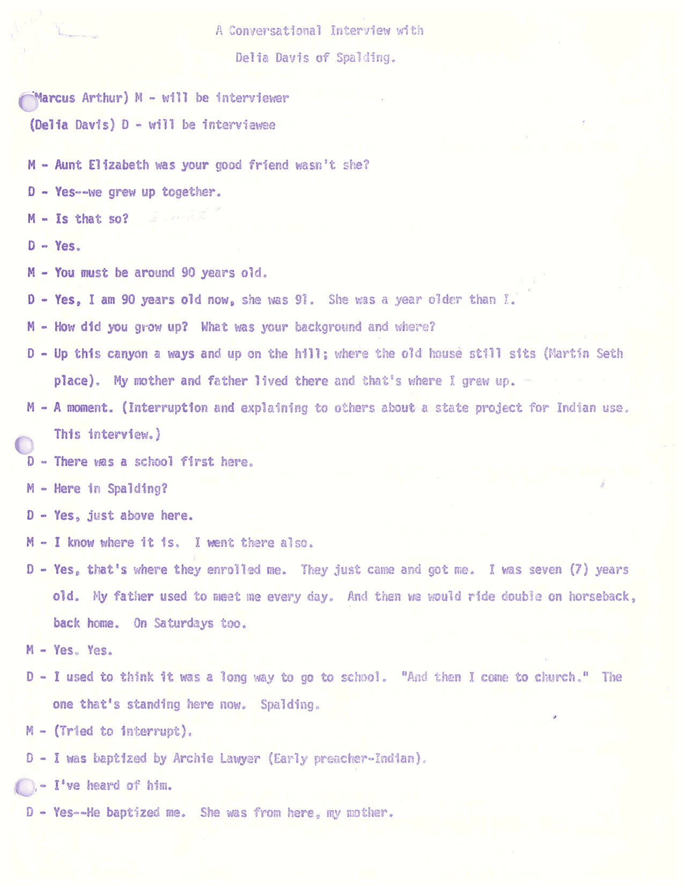
M (Marcus Arthur) = interviewer
D (Della Davis) = interviewee
M – Aunt Elizabeth was your good friend wasn't she?
D – Yes—we grew up together.
M – Is that so?
D – Yes.
M – You must be around 90 years old.
D – Yes, I am 90 years old now, she was 91. She was a year older than I.
Transcription continues for 24 pages…
The pages you see here represent decades of Mary McCarty's painstaking work — writing down words, recording conversations, preserving verb forms and stories that exist nowhere else. When we lost Mary to COVID, we lost a keeper of the language. But her notebook survived.
Safe4Seniors is building AI that can hold conversations in Nimíipuutímt. The same platform that makes daily wellness calls to seniors aging in place can help keep an endangered language alive — not as a museum artifact, but as a living, spoken language.
Fewer than 100 fluent speakers remain. Every word matters.
(Marcus Arthur) M = will be interviewer
(Della Davis) D = will be interviewee
M – Aunt Elizabeth was your good friend wasn't she?
D – Yes—we grew up together.
M – Is that so?
D – Yes.
M – You must be around 90 years old.
D – Yes, I am 90 years old now, she was 91. She was a year older than I.
M – How did you grow up? What was your background and where?
D – Up this canyon a ways and up on the hill; where the old house still sits (Martin Seth place). My mother and father lived there and that's where I grew up.
M – A moment. (Interruption and explaining to others about a state project for Indian use. This interview.)
D – There was a school first here.
M – Here in Spalding?
D – Yes, just above here.
M – I know where it is. I went there also.
D – Yes, that's where they enrolled me. They just came and got me. I was seven (7) years old. My father used to meet me every day. And then we would ride double on horseback, back home. On Saturdays too.
M – Yes. Yes.
D – I used to think it was a long way to go to school. And then I came to church. The one that's standing here now, Spalding.
M – (Tried to interrupt).
D – I was baptized by Archie Lawyer (Early preacher-Indian).
M – I've heard of him.
D – Yes—he baptized me. She was from here, my mother.
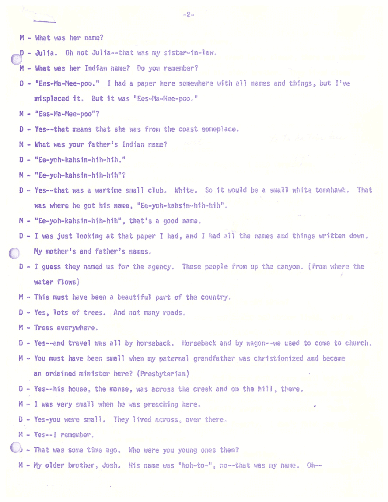
M – What was her name?
D – Julia. Or not Julia—that was my sister-in-law.
M – That was her Indian name? Do you remember?
D – "Eex-Na-Mee-poo." I had a paper here somewhere with all names and things, but I've misplaced it. But it was "Eex-Na-nee-poo."
M – "Eex-Na-Mee-poo"?
D – Yes—that means that she was from the coast someplace.
M – What was your father's Indian name?
D – "Ee-yoh-kahsin-hih-hih."
M – "Ee-yoh-kahsin-hih-hih-hih"?
D – Yes—that was a written small club. White. So it could be a small white tomahawk. That was where he got his name, "Ee-yoh-kahsin-hih-hih-hih".
M – "Ee-yoh-kahsin-hih-hih", that's a good name.
D – I was just looking at that paper I had, and I had all the names and things written down.
My mother's and father's names.
D – I guess they named us for the agency. These people from up the canyon. (from where the water flows)
M – This must have been a beautiful part of the country.
D – Yes, lots of trees. And not many roads.
M – Trees everywhere.
D – Yes—and travel was all by horseback, horseback and by wagon—we used to come to church.
M – You must have been small when my paternal grandfather was christianized and became an ordainedminister more? (Presbyterian)
D – Yes—his house, the manse, was across the creek and on the hill, there.
M – I was very small when he was preaching here.
D – Yes—you were small. They lived across, over there.
M – Yes—I remember.
D – That was some time ago. Who were you young ones then?
M – My older brother, Josh. His name was "hoh-lo-", no—that was my name. Oh—
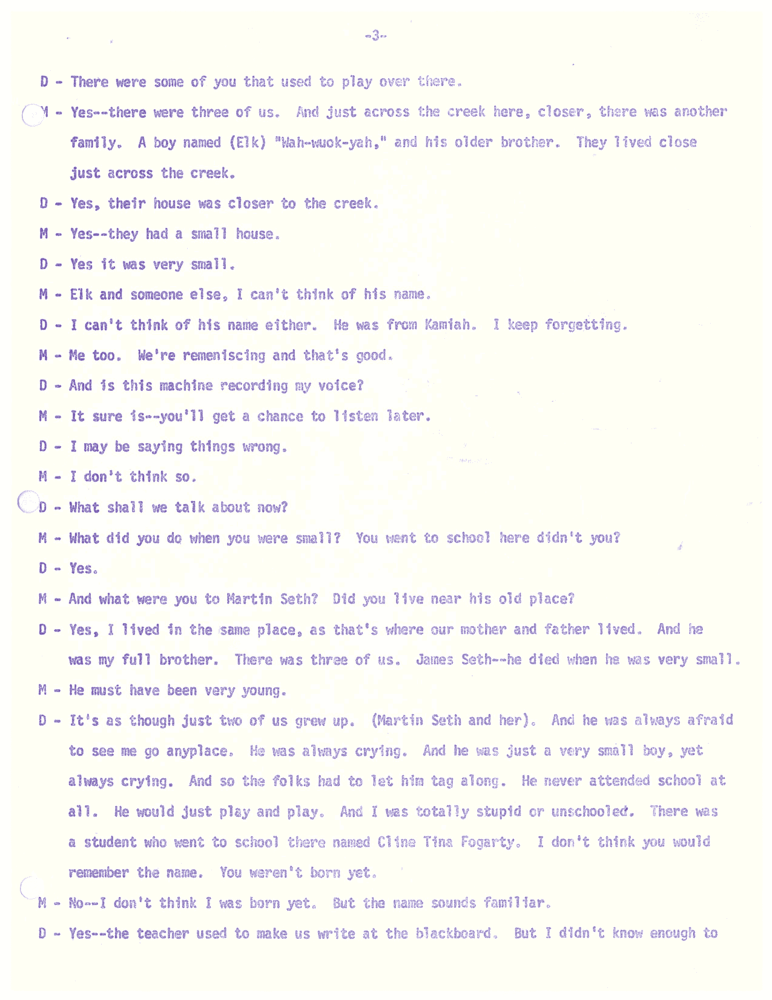
D – There were some of you that used to play over there.
M – Yes—there were three of us. And just across the creek here, closer, there was another family. A boy named (Elk) "Wah-wuok-yah," and his older brother. They lived close just across the creek.
D – Yes, their house was closer to the creek.
M – Yes—they had a small house.
D – Yes it was very small.
M – Elk and someone else, I can't think of his name.
D – I can't think of his name either. He was from Kamiah. I keep forgetting.
M – Me too. We're reminiscing and that's good.
D – And is this machine recording my voice?
M – It sure is—you'll get a chance to listen later.
D – I may be saying things wrong.
M – I don't think so.
D – What shall we talk about now?
M – What did you do when you were small? You went to school here didn't you?
D – Yes.
M – And what were you to Martin Seth? Did you live near his old place?
D – Yes, I lived in the same place, as that's where our mother and father lived. And he was my full brother. There was three of us. James Seth—he died when he was very small.
M – He must have been very young.
D – It's as though just two of us grew up. (Martin Seth and her). And he was always afraid to see me go anyplace. He was always crying. And he was just a very small boy, yet always crying. And so the folks had to let him tag along. He never attended school at all. He would just play and play. And I was totally stupid or unschooled. There was a student who went to school there named Cline Tina Fogarty. I don't think you would remember the name. You weren't born yet.
M – No—I don't think I was born yet. But the name sounds familiar.
D – Yes—the teacher used to make us write at the blackboard. But I didn't know enough to
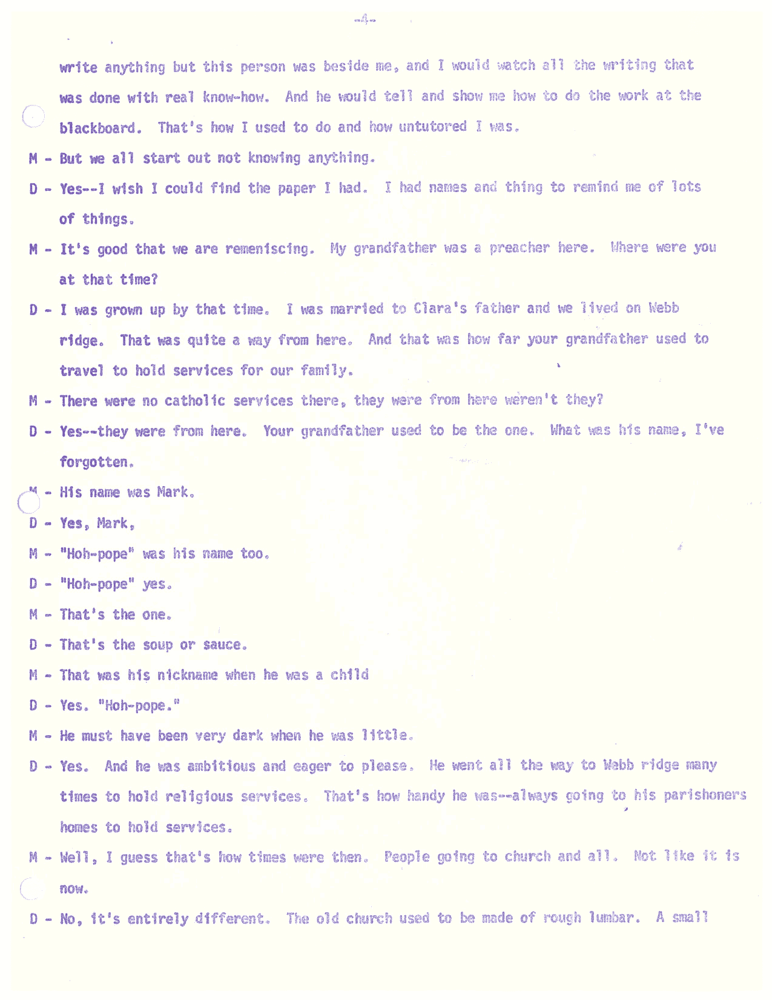
write anything but this person was beside me, and I would watch all the writing that was done with real know-how. And he would tell and show me how to do the work at the blackboard. That's how I used to do and how untutored I was.
M – But we all start out not knowing anything.
D – Yes—I wish I could find the paper I had. I had names and things to remind me of lots of things.
M – It's good that we are reminiscing. My grandfather was a preacher here. Where were you at that time?
D – I was grown up by that time. I was married to Clara's father and we lived on Webb ridge. That was quite a way from here. And that was how far your grandfather used to travel to hold services for our family.
M – There were no catholic services there, they were from here weren't they?
D – Yes—they were from here. Your grandfather used to be the one. What was his name, I've forgotten.
M – His name was Mark.
D – Yes, Mark.
M – "Hoh-pope" was his name too.
D – "Hoh-pope" yes.
M – That's the one.
D – That's the soup or sauce.
M – That was his nickname when he was a child.
D – Yes. "Hoh-pope."
M – He must have been very dark when he was little.
D – Yes. And he was ambitious and eager to please. He went all the way to Webb ridge many times to hold religious services. That's how handy he was—always going to his parishoners homes to hold services.
M – Well, I guess that's how times were then. People going to church and all. Not like it is now.
D – No, it's entirely different. The old church used to be made of rough lumber. A small
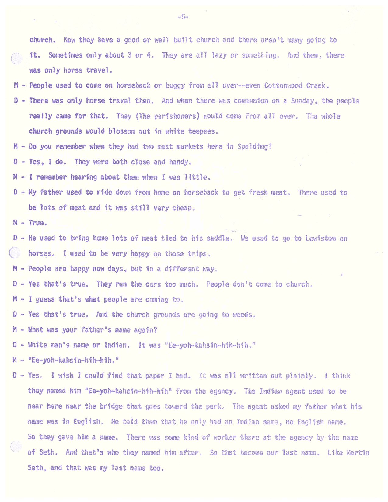
church. Now they have a good or well built church and there aren't many going to it. Sometimes only about 3 or 4. They are all lazy or something. And then, there was only horse travel.
M – People used to come on horseback or buggy from all over—even Cottonwood Creek.
D – There was only horse travel then. And when there was communion on a Sunday, the people really came for that. They (The parishioners) would come from all over. The whole church grounds would blossom out in white teepees.
M – Do you remember when they had two meat markets here in Spalding?
D – Yes, I do. They were both close and handy.
M – I remember hearing about them when I was little.
D – My father used to ride down from home on horseback to get fresh meat. There used to be lots of meat and it was still very cheap.
M – True.
D – He used to bring home lots of meat tied to his saddle. We used to go to Lewiston on horses. I used to be very happy on those trips.
M – People are happy now days, but in a different way.
D – Yes that's true. They run the cars too much. People don't come to church.
M – I guess that's what people are coming to.
D – Yes that's true. And the church grounds are going to weeds.
M – What was your father's name again?
D – White man's name or Indian. It was "Ee-yoh-kahsin-hih-hih."
M – "Ee-yoh-kahsin-hih-hih."
D – Yes. I wish I could find that paper I had. It was all written out plainly. I think they named him "Ee-yoh-kahsin-hih-hih" from the agency. The Indian agent used to be near here near the bridge that goes toward the park. The agent asked my father what his name was in English. He told them that he only had an Indian name, no English name. So they gave him a name. There was some kind of worker there at the agency by the name of Seth. And that's who they named him after. So that became our last name. Like Martin Seth, and that was my last name too.
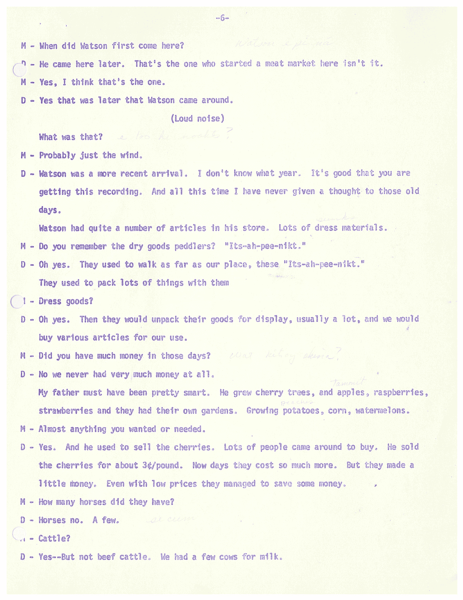
M – When did Watson first come here?
D – He came here later. That's the one who started a meat market here isn't it.
M – Yes, I think that's the one.
D – Yes that was later that Watson came around.
(Loud noise)
What was that?
M – Probably just the wind.
D – Watson was a more recent arrival. I don't know what year. It's good that you are getting this recording. And all this time I have never given a thought to those old days.
Watson had quite a number of articles in his store. Lots of dress materials.
M – Do you remember the dry goods peddlers? "Its-ah-pee-nikt."
D – Oh yes. They used to walk as far as our place, these "Its-ah-pee-nikt." They used to pack lots of things with them
M – Dress goods?
D – Oh yes. Then they would unpack their goods for display, usually a lot, and we would buy various articles for our use.
M – Did you have much money in those days?
D – No we never had very much money at all.
My father must have been pretty smart. He grew cherry trees, and apples, raspberries, strawberries and they had their own gardens. Growing potatoes, corn, watermelons.
M – Almost anything you wanted or needed.
D – Yes. And he used to sell the cherries. Lots of people came around to buy. He sold the cherries for about 3¢/pound. Now days they cost so much more. But they made a little money. Even with low prices they managed to save some money.
M – How many horses did they have?
D – Horses no. A few.
M – Cattle?
D – Yes—But not beef cattle. We had a few cows for milk.
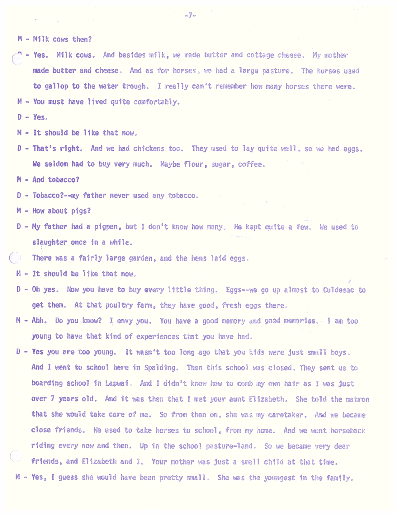
M – Milk cows then?
D – Yes. Milk cows. And besides milk, we made butter and cottage cheese. My mother made butter and cheese. And as for horses, we had a large pasture. The horses used to gallop to the water trough. I really can't remember how many horses there were.
M – You must have lived quite comfortably.
D – Yes.
M – It should be like that now.
D – That's right. And we had chickens too. They used to lay quite well, so we had eggs. We seldom had to buy very much. Maybe flour, sugar, coffee.
M – And tobacco?
D – Tobacco?—my father never used any tobacco.
M – How about pigs?
D – My father had a pigpen, but I don't know how many. He kept quite a few. We used to slaughter once in a while.
There was a fairly large garden, and the hens laid eggs.
M – It should be like that now.
D – Oh yes. Now you have to buy every little thing. Eggs—we go up almost to Culdesac to get them. At that poultry farm, they have good, fresh eggs there.
M – Ahh. Do you know? I envy you. You have a good memory and good memories. I am too young to have that kind of experiences that you have had.
D – Yes you are too young. It wasn't too long ago that you kids were just small boys. And I went to school here in Spalding. Then this school was closed. They sent us to boarding school in Lapwai. And I didn't know how to comb my own hair as I was just over 7 years old. And it was then that I met your aunt Elizabeth. She told the matron that she would take care of me. So from then on, she was my caretaker. And we became close friends. We used to take horses to school, from my home. And we went horseback riding every now and then. Up in the school pasture-land. So we became very dear friends, and Elizabeth and I. Your mother was just a small child at that time.
M – Yes, I guess she would have been pretty small. She was the youngest in the family.
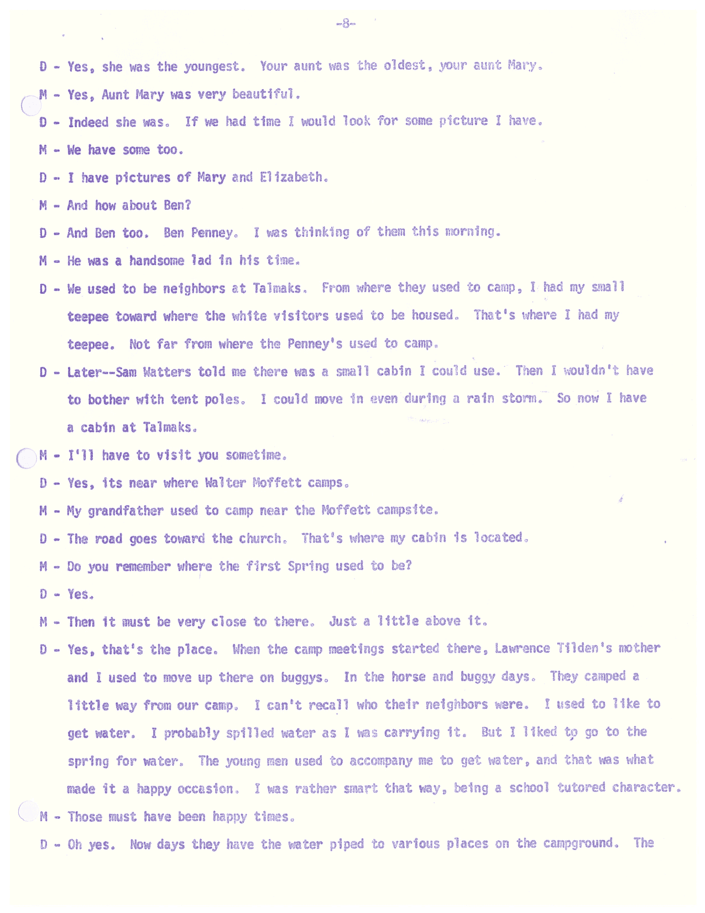
D – Yes, she was the youngest. Your aunt was the oldest, your aunt Mary.
M – Yes, Aunt Mary was very beautiful.
D – Indeed she was. If we had time I would look for some picture I have.
M – We have some too.
D – I have pictures of Mary and Elizabeth.
M – And how about Ben?
D – And Ben too. Ben Penney. I was thinking of them this morning.
M – He was a handsome lad in his time.
D – We used to be neighbors at Talmaks. From where they used to camp, I had my small teepee toward where the white visitors used to be housed. That's where I had my teepee. Not far from where the Penney's used to camp.
D – Later—Sam Watters told me there was a small cabin I could use. Then I wouldn't have to bother with tent poles. I could move in even during a rain storm. So now I have a cabin at Talmaks.
M – I'll have to visit you sometime.
D – Yes, its near where Walter Moffett camps.
M – My grandfather used to camp near the Moffett campsite.
D – The road goes toward the church. That's where my cabin is located.
M – Do you remember where the first Spring used to be?
D – Yes.
M – Then it must be very close to there. Just a little above it.
D – Yes, that's the place. When the camp meetings started there, Lawrence Tilden's mother and I used to move up there on buggys. In the horse and buggy days. They camped a little way from our camp. I can't recall who their neighbors were. I used to like to get water. I probably spilled water as I was carrying it. But I liked to go to the spring for water. The young men used to accompany me to get water, and that was what made it a happy occasion. I was rather smart that way, being a school tutored character.
M – Those must have been happy times.
D – Oh yes. Now days they have the water piped to various places on the campground. The
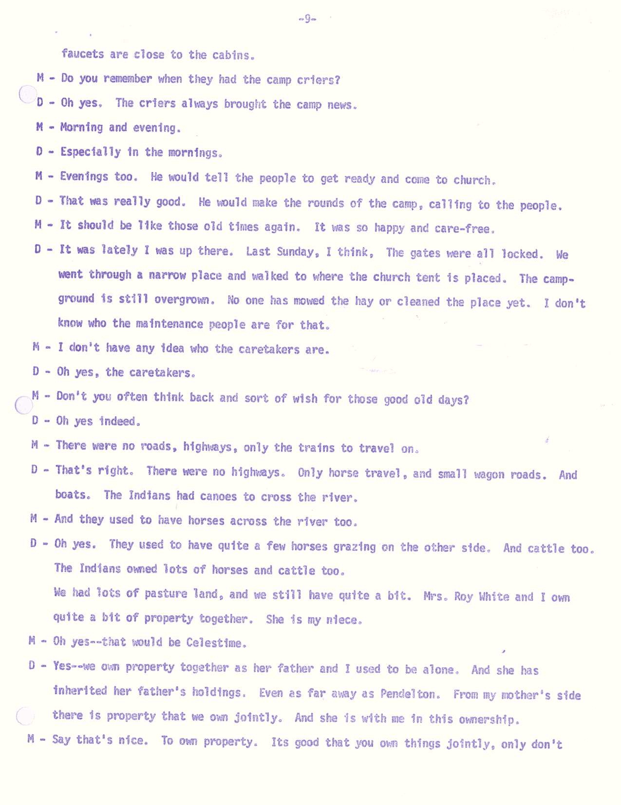
faucets are close to the cabins.
M – Do you remember when they had the camp criers?
D – Oh yes. The criers always brought the camp news.
M – Morning and evening.
D – Especially in the mornings.
M – Evenings too. He would tell the people to get ready and come to church.
D – That was really good. He would make the rounds of the camp, calling to the people.
M – It should be like those old times again. It was so happy and care-free.
D – It was lately I was up there. Last Sunday, I think. The gates were all locked. We went through a narrow place and walked to where the church tent is placed. The campground is still overgrown. No one has mowed the hay or cleaned the place yet. I don't know who the maintenance people are for that.
M – I don't have any idea who the caretakers are.
D – Oh yes, the caretakers.
M – Don't you often think back and sort of wish for those good old days?
D – Oh yes indeed.
M – There were no roads, highways, only the trains to travel on.
D – That's right. There were no highways. Only horse travel, and small wagon roads. And boats. The Indians had canoes to cross the river.
M – And they used to have horses across the river too.
D – Oh yes. They used to have quite a few horses grazing on the other side. And cattle too. The Indians owned lots of horses and cattle too.
We had lots of pasture land, and we still have quite a bit. Mrs. Roy White and I own quite a bit of property together. She is my niece.
M – Oh yes—that would be Celestime.
D – Yes—we own property together as her father and I used to be alone. And she has inherited her father's holdings. Even as far away as Pendelton. From my mother's side there is property that we own jointly. And she is with me in this ownership.
M – Say that's nice. To own property. Its good that you own things jointly, only don't
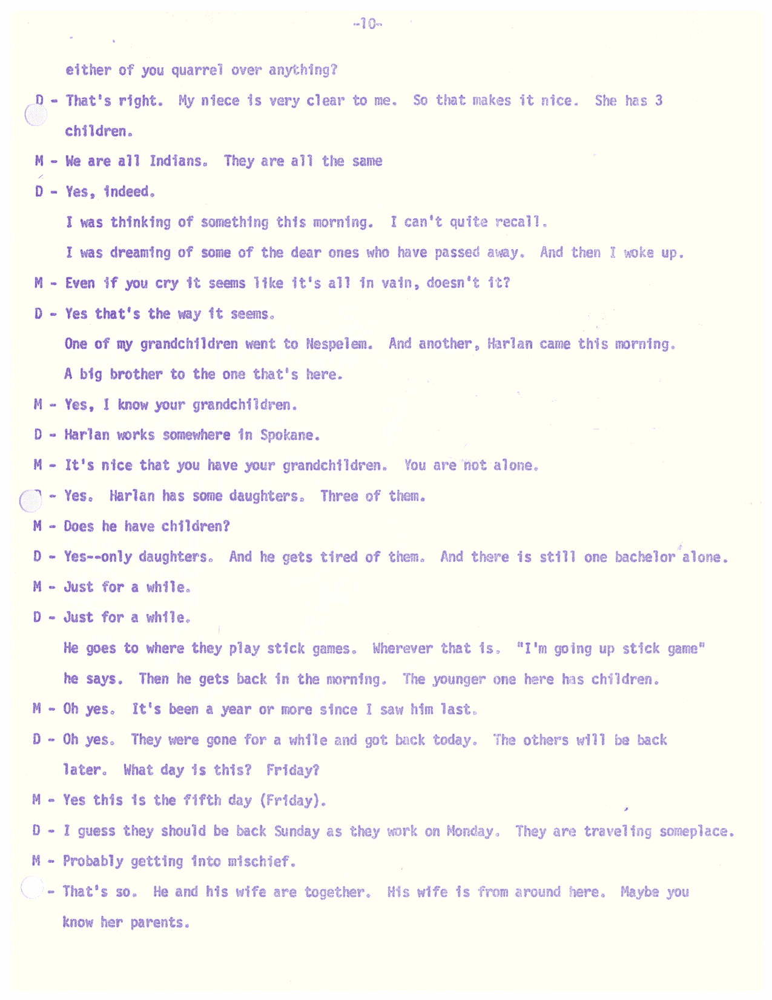
either of you quarrel over anything?
D – That's right. My niece is very dear to me. So that makes it nice. She has 3 children.
M – We are all Indians. They are all the same
D – Yes, indeed.
I was thinking of something this morning. I can't quite recall.
I was dreaming of some of the dear ones who have passed away. And then I woke up.
M – Even if you cry it seems like it's all in vain, doesn't it?
D – Yes that's the way it seems.
One of my grandchildren went to Nespelem. And another, Harlan came this morning. A big brother to the one that's here.
M – Yes, I know your grandchildren.
D – Harlan works somewhere in Spokane.
M – It's nice that you have your grandchildren. You are not alone.
D – Yes. Harlan has some daughters. Three of them.
M – Does he have children?
D – Yes—only daughters. And he gets tired of them. And there is still one bachelor alone.
M – Just for a while.
D – Just for a while.
He goes to where they play stick games. Wherever that is. "I'm going up stick game" he says. Then he gets back in the morning. The younger one here has children.
M – Oh yes. It's been a year or more since I saw him last.
D – Oh yes. They were gone for a while and got back today. The others will be back later. What day is this? Friday?
M – Yes this is the fifth day (Friday).
D – I guess they should be back Sunday as they work on Monday. They are traveling someplace.
M – Probably getting into mischief.
D – That's so. He and his wife are together. His wife is from around here. Maybe you know her parents.
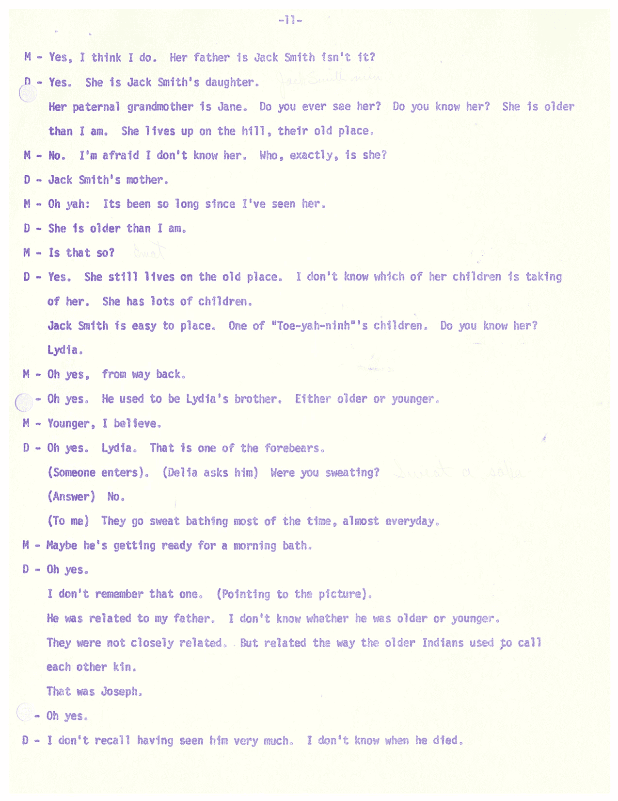
M – Yes, I think I do. Her father is Jack Smith isn't it?
D – Yes. She is Jack Smith's daughter.
Her paternal grandmother is Jane. Do you ever see her? She is older than I am. She lives up on the hill, their old place.
M – No. I'm afraid I don't know her. Who, exactly, is she?
D – Jack Smith's mother.
M – Oh yes: its been so long since I've seen her.
D – She is older than I am.
M – Is that so?
D – Yes. She still lives on the old place. I don't know which of her children is taking care of her. She has lots of children.
Jack Smith is easy to place. One of "Tha-yeh-niht"'s children. Do you know her? Lydia.
M – Oh yes, from way back.
D – Oh yes. He used to be Lydia's brother. Either older or younger.
M – Younger, I believe.
D – Oh yes. Lydia. That is one of the forebears.
(Someone enters). (Della asks him) Were you sweating?
(Answer) No.
(To me) They go sweat bathing most of the time, almost everyday.
M – Maybe he's getting ready for a morning bath.
D – Oh yes.
I don't remember that one. (Pointing to the picture). He was related to my father. I don't know whether he was older or younger. They were not closely related. But related the way the older Indians used to call each other kin.
That was Joseph.
M – Oh yes.
D – I don't recall having seen him very much. I don't know when he died.
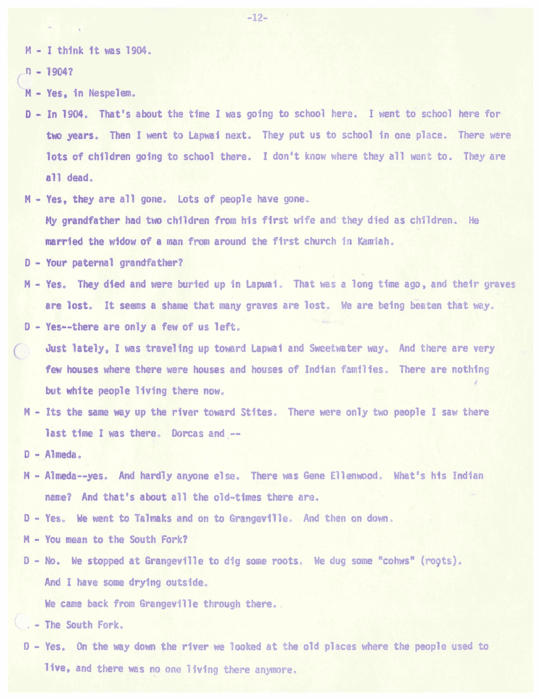
M – I think it was 1904.
D – 1904?
M – Yes, in Nespelem.
D – In 1904. That's about the time I was going to school here. I went to school here for two years. Then I went to Lapwai next. They put us to school in one place. There were lots of children going to school there. I don't know where they all went to. They are all dead.
M – Yes, they are all gone. Lots of people have gone.
My grandfather had two children from his first wife and they died as children. He married the widow of a man from around the first church in Kamiah.
D – Your paternal grandfather?
M – Yes. They died and were buried up in Lapwai. That was a long time ago, and their graves are lost. It seems a shame that many graves are lost. We are being beaten that way.
D – Yes—there are only a few of us left.
Just lately, I was traveling up toward Lapwai and Sweetwater way. And there are very few houses where there were houses and houses of Indian families. There are nothing but white people living there now.
M – Its the same way up the river toward Stites. There were only two people I saw there last time I was there. Dorcas and —
D – Almeda.
M – Almeda—yes. And hardly anyone else. There was Gene Ellenwood. What's his Indian name? And that's about all the old-times there are.
D – Yes. We went to Talmaks and on to Grangeville. And then on down.
M – You mean to the South Fork?
D – No. We stopped at Grangeville to dig some roots. We dug some "couse" (roots). And I have some drying outside.
We came back from Grangeville through there.
M – The South Fork.
D – Yes. On the way down the river we looked at the old places where the people used to live, and there was no one living there anymore.
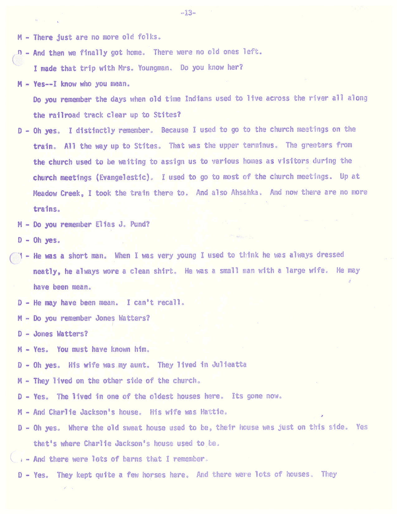
M – There just are no more old folks.
D – And then we finally got home. There were no old ones left. I made that trip with Mrs. Youngman. Do you know her?
M – Yes—I know who you mean.
Do you remember the days when old time Indians used to live across the river all along the railroad track clear up to Stites?
D – Oh yes. I distinctly remember. Because I used to go to the church meetings on the train. All the way up to Stites. That was the upper terminus. The greeters from the church used to be waiting to assign us to various homes as visitors during the church meetings (Evangelestic). I used to go to most of the church meetings. Up at Meadow Creek, I took the train there to. And also Ahsahka. And now there are no more trains.
M – Do you remember Elias J. Pund?
D – Oh yes.
M – He was a short man. When I was very young I used to think he was always dressed neatly, he always wore a clean shirt. He was a small man with a large wife. He may have been mean.
D – He may have been mean. I can't recall.
M – Do you remember Jones Watters?
D – Jones Watters?
M – Yes. You must have known him.
D – Oh yes. His wife was my aunt. They lived in Julieatta
M – They lived on the other side of the church.
D – Yes. The lived in one of the oldest houses here. Its gone now.
M – And Charlie Jackson's house. His wife was Hattie.
D – Oh yes. Where the old sweat house used to be, their house was just on this side. Yes that's where Charlie Jackson's house used to be.
M – And there were lots of barns that I remember.
D – Yes. They kept quite a few horses here. And there were lots of houses. They
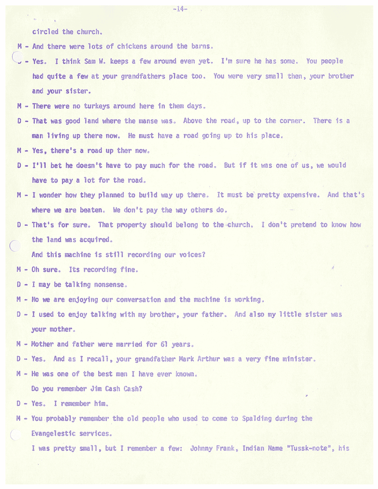
circled the church.
M – And there were lots of chickens around the barns.
D – Yes. I think Sam W. keeps a few around even yet. I'm sure he has some. You people had quite a few at your grandfathers place too. You were very small then, your brother and your sister.
M – There were no turkeys around here in them days.
D – That was good land where the manse was. Above the road, up to the corner. There is a man living up there now. He must have a road going up to his place.
M – Yes, there's a road up there now.
D – I'll bet he doesn't have to pay much for the road. But if it was one of us, we would have to pay a lot for the road.
M – I wonder how they planned to build way up there. It must be pretty expensive. And that's where we are beaten. We don't pay the way others do.
D – That's for sure. That property should belong to the church. I don't pretend to know how the land was acquired.
And this machine is still recording our voices?
M – Oh sure. Its recording fine.
D – I may be talking nonsense.
M – No we are enjoying our conversation and the machine is working.
D – I used to enjoy talking with my brother, your father. And also my little sister was your mother.
M – Mother and father were married for 51 years.
D – Yes. And as I recall, your grandfather Mark Arthur was a very fine minister.
M – He was one of the best men I have ever known.
Do you remember Jim Cash Cash?
D – Yes. I remember him.
M – You probably remember the old people who used to come to Spalding during the Evangelestic services.
I was pretty small, but I remember a few: Johnny Frank, Indian Name "Tussk-note", his
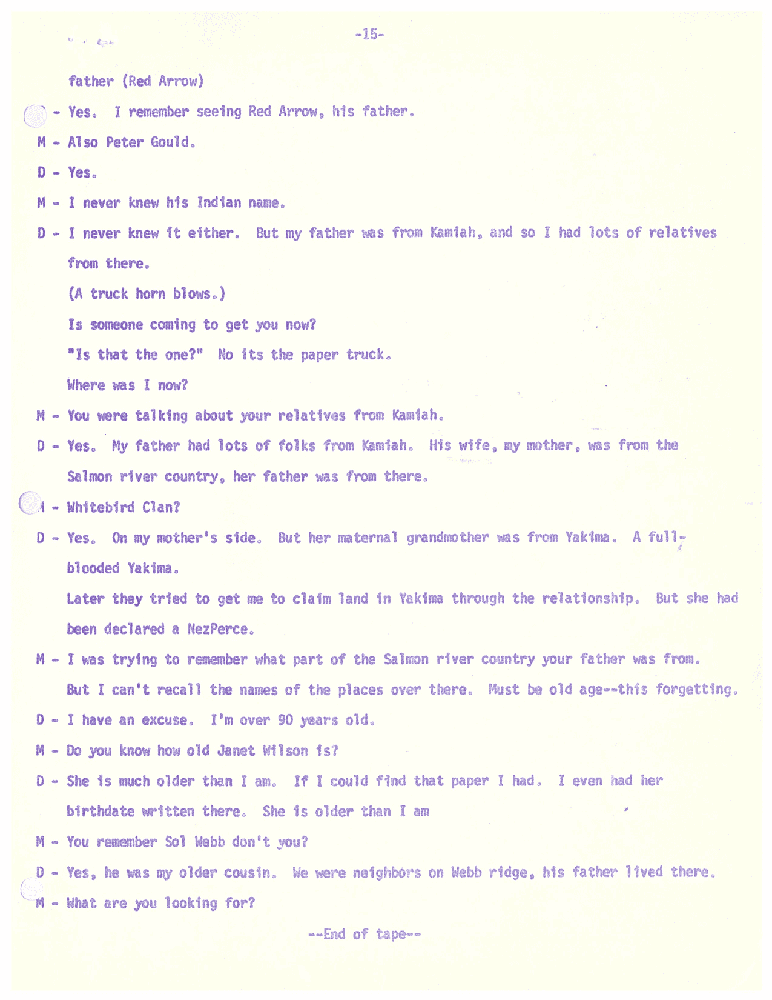
father (Red Arrow)
D – Yes. I remember seeing Red Arrow, his father.
M – Also Peter Gould.
D – Yes.
M – I never knew his Indian name.
D – I never knew it either. But my father was from Kamiah, and so I had lots of relatives from there.
(A truck horn blows.)
Is someone coming to get you now?
"Is that the one?" No its the paper truck.
Where was I now?
M – You were talking about your relations from Kamiah.
D – Yes. My father had lots of folks from Kamiah. His wife, my mother, was from the Salmon river country, her father was from there.
M – Whitesand Clan?
D – Yes. On my mother's side. But her maternal grandmother was from Yakima. A full-blooded Yakima.
Later they tried to get me to claim land in Yakima through the relationship. But she had been declared a NezPerce.
M – I was trying to remember what part of the Salmon river country your father was from. But I can't recall the names of the places over there. Must be old age—this forgetting.
D – I have an excuse. I'm over 90 years old.
M – Do you know how old Janet Wilson is?
D – She is much older than I am. If I could find that paper I had. I even had her birthdate written there. She is older than I am.
M – You remember Sol Webb don't you?
D – Yes, he was my older cousin. We were neighbors on Webb Ridge, his father lived there.
M – What are you looking for?
—End of tape—
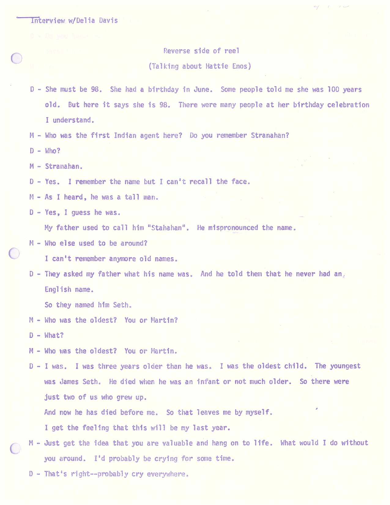
Reverse side of reel
(Talking about Hattie Cones)
D – She must be 96. She had a birthday in June. Some people told me she was 100 years old. But here it says she is 96. There were many people at her birthday celebration I understand.
M – Who was the first Indian agent here? Do you remember Stranahan?
D – Who?
M – Stranahan.
D – Yes. I remember the name but I can't recall the face.
M – As I heard, he was a tall man.
D – Yes, I guess he was.
My father used to call him "Italahan". He mispronounced the name.
M – Who else used to be around?
I can't remember anymore old names.
D – They asked my father what his name was. And he told them that he never had an English name.
So they named him Seth.
M – Who was the oldest? You or Martin?
D – What?
M – Who was the oldest? You or Martin.
D – I was. I was three years older than he was. I was the oldest child. The youngest was James Seth. He died when he was an infant or not much older. So there were just two of us who grew up.
And now he has died before me. So that leaves me by myself.
I get the feeling that this will be my last year.
M – Just get the idea that you are valuable and hang on to life. What would I do without you around. I'd probably be crying for some time.
D – That's right—probably cry everywhere.
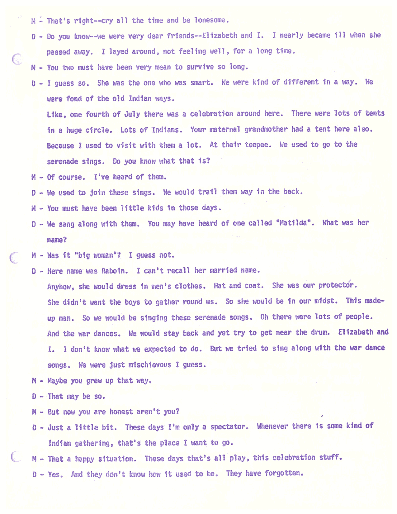
M – That's right—cry all the time and be lonesome.
D – Do you know—we were very dear friends—Elizabeth and I. I nearly became ill when she passed away. I layed around, not feeling well, for a long time.
M – You two must have been very mean to survive so long.
D – I guess so. She was the one who was smart. We were kind of different in a way. We were fond of the old Indian ways.
Like, one fourth of July there was a celebration around here. There were lots of tents in a huge circle. Lots of Indians. Your maternal grandmother had a tent here also. Because I used to visit with them a lot. At their teepee. We used to go to the serenade sings. Do you know what that is?
M – Of course. I've heard of them.
D – We used to join these sings. We would trail them way in the back.
M – You must have been little kids in those days.
D – We sang along with them. You may have heard of one called "Matilda". What was her name?
M – Was it "big woman"? I guess not.
D – Here name was Raboin. I can't recall her married name. Anyhow, she would dress in men's clothes. Hat and coat. She was our protector. She didn't want the boys to gather round us. So she would be in our midst. This made-up man. So we would be singing these serenade songs. Oh there were lots of people. And the war dances. We would stay back and yet try to get near the drum. Elizabeth and I. I don't know what we expected to do. But we tried to sing along with the war dance songs. We were just mischievous I guess.
M – Maybe you grew up that way.
D – That may be so.
M – But now you are honest aren't you?
D – Just a little bit. These days I'm only a spectator. Whenever there is some kind of Indian gathering, that's the place I want to go.
M – That a happy situation. These days that's all play, this celebration stuff.
D – Yes. And they don't know how it used to be. They have forgotten.
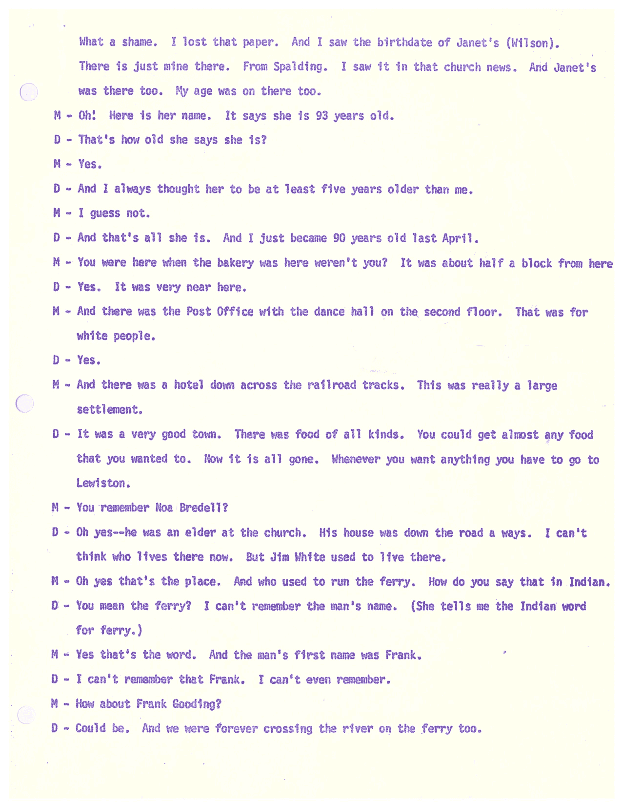
What a shame. I lost that paper. And I saw the birthdate of Janet's (Wilson). There is just nine there. From Spalding. I saw it in that church news. And Janet's was there too. My age was on there too.
M – Oh! Here is her name. It says she is 93 years old.
D – That's how old she says she is?
M – Yes.
D – And I always thought her to be at least five years older than me.
M – I guess not.
D – And that's all she is. And I just became 90 years old last April.
M – You were here when the bakery was here weren't you? It was about half a block from here.
D – Yes. It was very near here.
M – And there was the Post Office with the dance hall on the second floor. That was for white people.
D – Yes.
M – And there was a hotel down across the railroad tracks. This was really a large settlement.
D – It was a very good town. There was food of all kinds. You could get almost any food that you wanted to. Now it is all gone. Whenever you want anything you have to go to Lewiston.
M – You remember Ros Brodell?
D – Oh yes—he was an elder at the church. His house was down the road a ways. I can't think who lives there now. But the White used to live there.
M – Oh yes that's the place. And who used to run the ferry. How do you say that in Indian. (She tells me the Indian word for ferry.)
D – You mean the ferry? I can't remember the man's name.
M – Yes that's the word. And the man's first name was Frank.
D – I can't remember that Frank. I can't even remember.
M – How about Frank Gooding?
D – Could be. And we were forever crossing the river on the ferry too.
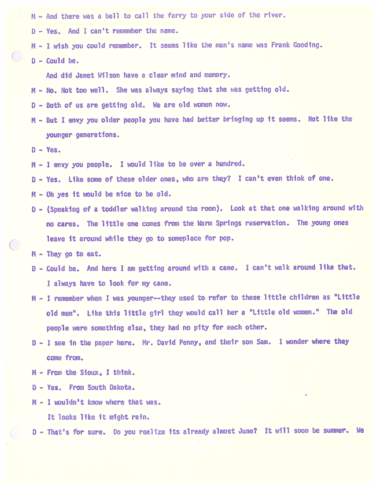
M – And there was a bell to call the ferry to your side of the river.
D – Yes. And I can't remember the name.
M – I wish you could remember. It seems like the man's name was Frank Gooding.
D – Could be.
And did Janet Wilson have a clear mind and memory.
M – No. Not too well. She was always saying that she was getting old.
D – Both of us are getting old. We are old women now.
M – But I envy you older people you have had better bringing up it seems. Not like the younger generations.
D – Yes.
M – I envy you people. I would like to be over a hundred.
D – Yes. Like some of these older ones, who are they? I can't even think of one.
M – Oh yes it would be nice to be old.
D – (Speaking of a toddler walking around the room). Look at that one walking around with no cares. The little one comes from the Warm Springs reservation. The young ones leave it around while they go to someplace for pop.
M – They go to eat.
D – Could be. And here I am getting around with a cane. I can't walk around like that. I always have to look for my cane.
M – I remember when I was younger—they used to refer to these little children as "little old man". Like this little girl they would call her "little old woman." The old people were something else, they had no pity for each other.
D – I see in the paper here, Mr. David Penney, and their son Sam. I wonder where they come from.
M – From the Sioux, I think.
D – Yes. From South Dakota.
M – I wouldn't know where that was.
It looks like it might rain.
D – That's for sure. Do you realize its already almost June? It will soon be summer. We
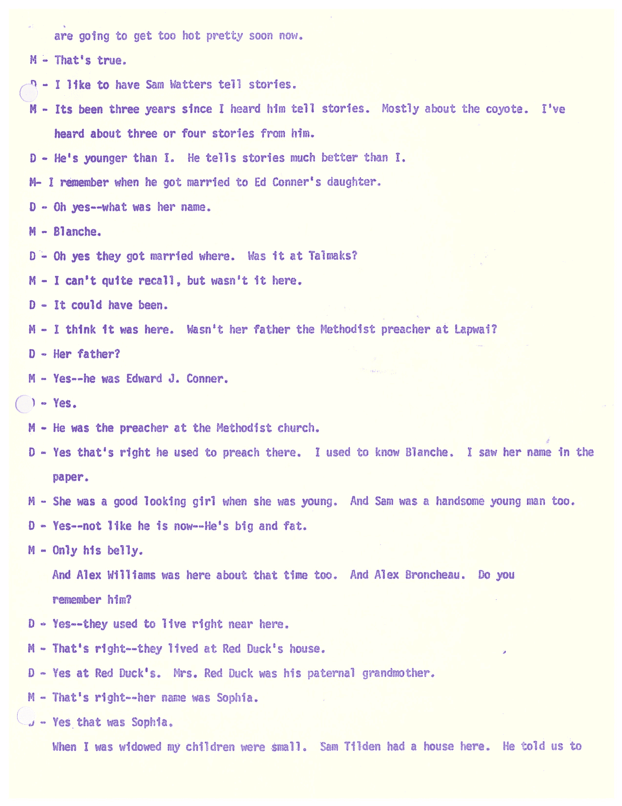
are going to get too hot pretty soon now.
M – That's true.
D – I like to have Sam Watters tell stories.
M – Its been three years since I heard him tell stories. Mostly about the coyote. I've heard about three or four stories from him.
D – He's younger than I. He tells stories much better than I.
M – I remember when he got married to Ed Conner's daughter.
D – Oh yes—what was her name.
M – Blanche.
D – Oh yes they got married where. Was it at Talmaks?
M – I can't quite recall, but wasn't it here.
D – It could have been.
M – I think it was here. Wasn't her father the Methodist preacher at Lapwai?
D – Her father?
M – Yes—he was Edward J. Conner.
D – Yes.
M – He was the preacher at the Methodist church.
D – Yes that's right he used to preach there. I used to know Blanche. I saw her name in the paper.
M – She was a good looking girl when she was young. And Sam was a handsome young man too.
D – Yes—not like he is now—he's big and fat.
M – Only his belly.
And Alex Williams was here about that time too. And Alex Broncheau. Do you remember him?
D – Yes—they used to live right near here.
M – That's right—they lived at Red Duck's house.
D – Yes at Red Duck's. Mrs. Red Duck was his paternal grandmother.
M – That's right—her name was Sophie.
D – Yes that was Sophie.
When I was widowed my children were small. Sam Tilden had a house here. He told us to
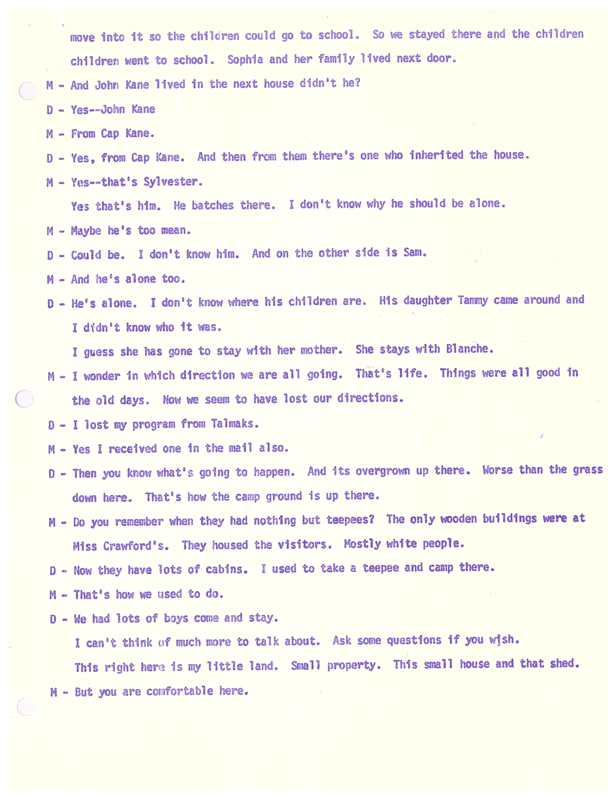
move into it so the children could go to school. So we stayed there and the children went to school. Sophie and her family lived next door.
M – And John Kane lived in the next house didn't he?
D – Yes—John Kane.
M – From Cap Kane.
D – Yes, from Cap Kane. And then from there there's one who inherited the house.
M – Yes—that's Sylvester.
Yes that's him. He batches there. I don't know why he should be alone.
M – Maybe he's too mean.
D – Could be. I don't know him. And on the other side is Sam.
M – And he's alone too.
D – He's alone. I don't know where his children are. His daughter Tammy came around and I didn't know who it was.
I guess she has gone to stay with her mother. She stays with Blanche.
M – I wonder in which direction we are all going. That's life. Things are all good in the old days. Now we seem to have lost our directions.
D – I lost my program from Talmaks.
M – Yes I received one in the mail also.
D – Then you know what's going to happen. And its overgrown up there. Worse than the grass down here. That's how the camp ground is up there.
M – Do you remember when they had nothing but teepees? The only wooden buildings were at Miss Crawford's. They housed the visitors. Mostly white people.
D – Now they have lots of cabins. I used to take a teepee and camp there.
M – That's how we used to do.
D – We had lots of boys come and stay.
I can't think of much more to talk about. Ask some questions if you wish.
This right here is my little land. Small property. This small house and that shed.
M – But you are comfortable here.
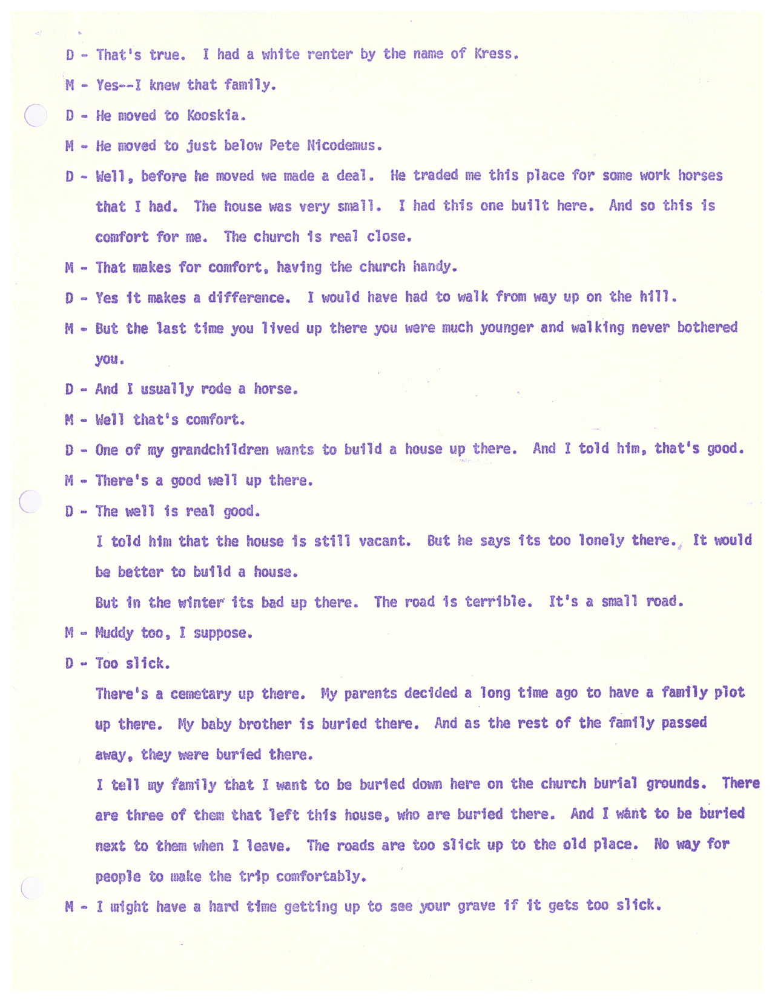
D – That's true. I had a white renter by the name of Grass.
M – Yes—I know that family.
D – He moved to Kooskia.
M – He moved to just below Pete Nicodemus.
D – Well, before he moved we made a deal. He traded me this place for some work terrace that I had. The house was very small. I had this one built here. And so this is comfort for me. The church is real close.
M – That makes for comfort, having the church handy.
D – Yes it makes a difference. I would have had to walk from way up on the hill.
M – But the last time you lived up there you were much younger and walking never bothered you.
D – And I usually rode a horse.
M – Well that's comfort.
D – One of my grandchildren wants to build a house up there. And I told him, that's good.
M – There's a good well up there.
D – The well is real good.
I told him that the house is still vacant. But he says its too lonely there. It would be better to build a house.
But in the winter its bad up there. The road is terrible. It's a small road.
M – Muddy too, I suppose.
D – Too slick.
There's a cemetery up there. My parents decided a long time ago to have a family plot up there. My baby brother is buried there. And as the rest of the family passed away, they were buried there.
I tell my family that I want to be buried down here on the church burial grounds. There are three of them that left this house, who are buried there. And I want to be buried next to them when I leave. The roads are too slick up to the old place. No way for people to make the trip comfortably.
M – I might have a hard time getting up to see your grave if it gets too slick.
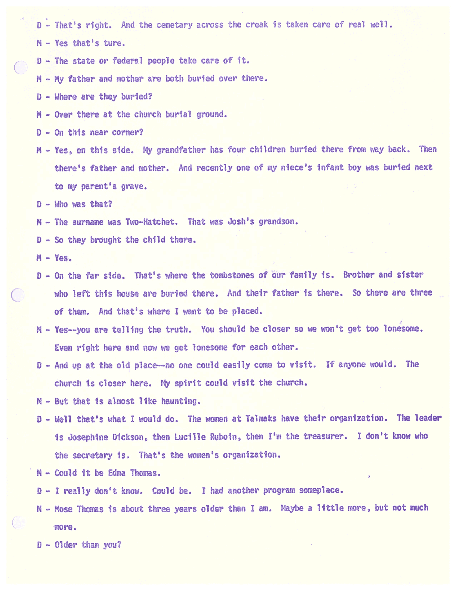
D – That's right. And the cemetery across the creek is taken care of real well.
M – Yes that's true.
D – The state or federal people take care of it.
M – My father and mother are both buried over there.
D – Where are they buried?
M – Over there at the church burial ground.
D – On this near corner?
M – Yes, on this side. My grandfather has four children buried there from way back. Then there's father and mother. And recently one of my niece's infant boy was buried next to my parent's grave.
D – Who was that?
M – The surnames was Two-Hatchet. That was Josh's grandson.
D – So they brought the child there.
M – Yes.
D – On the far side. That's where the tombstones of our family is. Brother and sister who left this house are buried there. And their father is there. So there are three of them. And that's where I want to be placed.
M – Yes—you are telling the truth. You should be closer so we won't get too lonesome. Even right here and now we get lonesome for each other.
D – And up at the old place—no one could easily come to visit. If anyone would. The church is closer here. My spirit could visit the church.
M – But that's almost like haunting.
D – Well that's what I could do. The women at Talmaks have their organization. The leader is Josephine Dickson, then Lucille Rubule, then I'm the treasurer. I don't know who the secretary is. That's the women's organization.
M – Could it be Edna Thomas.
D – I really don't know. Could be. I had another program someplace.
M – Mose Thomas is about three years older than I am. Maybe a little more, but not much more.
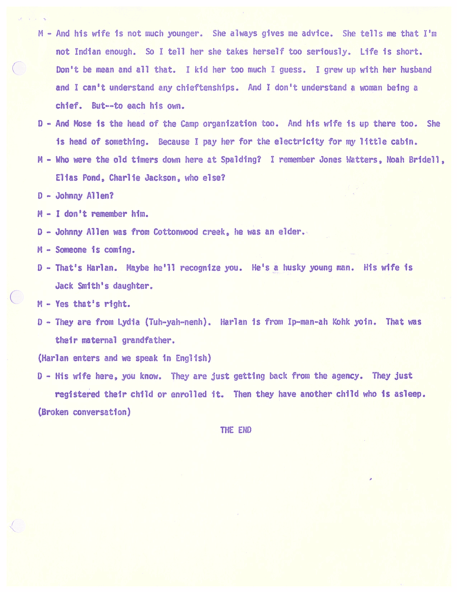
D – Older than you?
M – And his wife is not much younger. She always gives me advice. She tells me that I'm not Indian enough. So I tell her she takes herself too seriously. Life is short. Don't be mean and all that. I kid her too much I guess. I grew up with her husband and I can't understand any chieftainships. And I don't understand a woman being a chief. But—to each his own.
D – And Mose is the head of the Camp organization too. And his wife is up there too. She is head of something. Because I pay her for the electricity for my little cabin.
M – Who were the old timers down here at Spalding? I remember Jones Watters, Noah Brodell, Elias Pond, Charlie Jackson, who else?
D – Johnny Allen?
M – I don't remember him.
D – Johnny Allen was from Cottonwood creek, he was an elder.
M – That's Harlan. Maybe he'll recognize you. He's a lucky young man. His wife is Jack Smith's daughter.
D – Yes that's right.
M – Someone is coming.
D – They are from Lydia (Tah-yah-neeh). Harlan is from Ip-men-eh Wah poh. That was their maternal grandfather.
(Harlan enters and we speak in English)
D – His wife here, you know. They are just getting back from the agency. They just registered their child or enrolled it. Then they have another child who is asleep.
(Broken conversation)
THE END
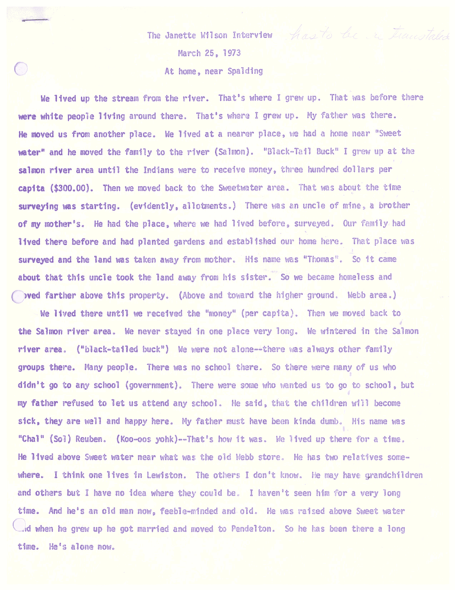
March 25, 1973
At home, near Spalding
We lived up the stream from the river. That's where I grew up. That was before there were white people living around there. That's where I grew up. My father was there. He moved us from another place. We lived at a nearer place, we had a home near "Sweet water" and he moved the family to the river (Salmon). "Black-Tail Buck" I grew up at the Salmon river area until the Indians were to receive money, three hundred dollars per capita ($300.00). Then we moved back to the Sweetwater area. That was about the time surveying was starting. (evidently, allotments.) There was an uncle of mine, a brother of my mother's. He had the place, where we had lived before, surveyed. Our family had lived there before and had planted gardens and established our home here. That place was surveyed and the land was taken away from mother. His name was "Thomas". So it came about that this uncle took the land away from his sister. So we became homeless and moved farther above this property. (Above and toward the higher ground. Webb area.)
We lived there until we received the "money" (per capita). Then we moved back to the Salmon river area. We never stayed in one place very long. We wintered in the Salmon river area. ("black-tailed luck") We were not alone—there was always other family groups there. Many people. There was no school there. So there were many of us who didn't go to any school (government). There were some who wanted us to go to school, but my father refused to let us attend any school. He said, that the children will become sick, they are well and happy here. My father must have been kinda dumb. His name was "Chal" (Sol) Reuben. (Ree-oos yohk)—That's how it was. We lived up there for a time. He lived above Sweet water near what was the old Webb store. He has two relatives somewhere. I think one lives in Lewiston. The others I don't know. He may have grandchildren and others but I have no idea where they could be. I haven't seen him for a very long time. And he's an old man now, feeble-minded and old. He was raised above Sweet water and when he grew up he got married and moved to Pendleton. So he has been there a long time. He's alone now.
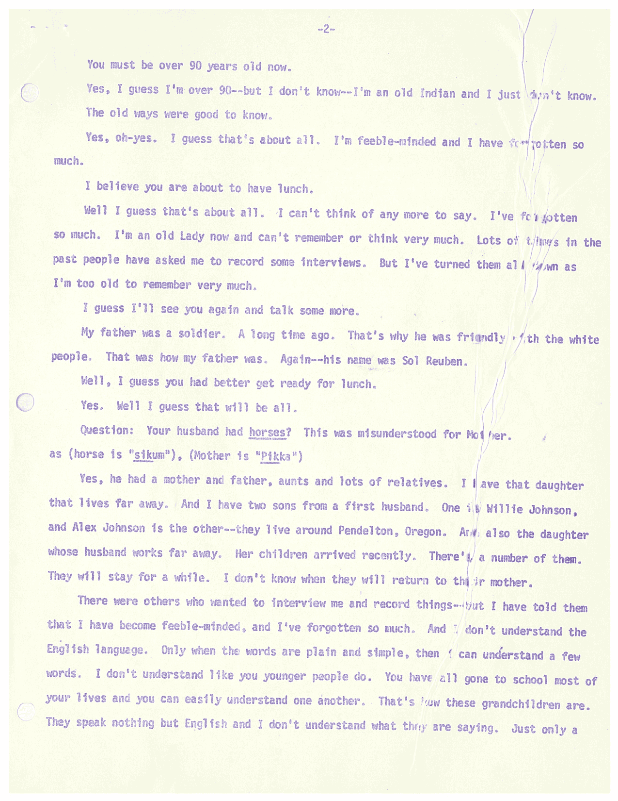
You must be over 90 years old now.
Yes, I guess I'm over 90—but I don't know—I'm an old Indian and I just don't know. The old ways were good to know.
Yes, oh—yes. I guess that's about all. I'm feeble-minded and I have forgotten so much.
I believe you are about to have lunch.
Well I guess that's about all. I can't think of any more to say. I've forgotten so much. I'm an old Lady now and can't remember or think very much. Lots of times in the past people have asked me to record some interviews. But I've turned them all down as I'm too old to remember very much.
I guess I'll see you again and talk some more.
My father was a soldier. A long time ago. That's why he was friendly with the white people. That was how my father was. Again—his name was Sol Reuben.
Well, I guess you had better get ready for lunch.
Yes. Well I guess that will be all.
Question: Your husband had horses? This was misunderstood for Mother. as (horse is "sikum"), (Mother is "Pika")
Yes, he had a mother and father, aunts and lots of relatives. I have that daughter that lives far away. And I have two sons from a first husband. One is Willie Johnson, and Alex Johnson is the other—they live around Pendelton, Oregon. And also the daughter whose husband works far away. Her children arrived recently. There's a number of them. They will stay for a while. I don't know when they will return to their mother.
There were others who wanted to interview me and record things—but I have told them that I have become feeble-minded, and I've forgotten so much. And I don't understand the English language. Only when the words are plain and simple, then I can understand a few words. I don't understand like you younger people do. You have all gone to school most of your lives and you can easily understand one another. That's how these grandchildren are. They speak nothing but English and I don't understand what they are saying. Just only a
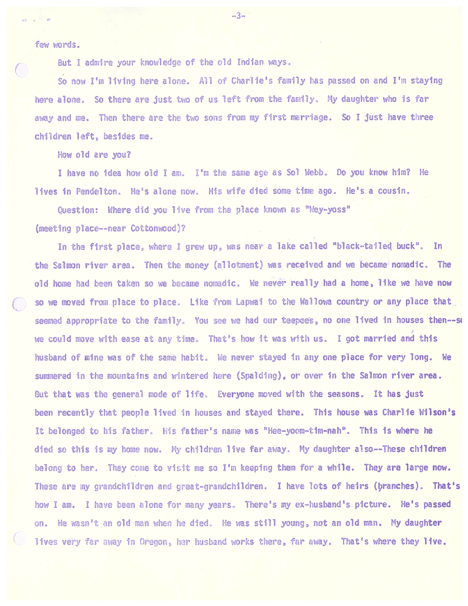
few words.
But I admire your knowledge of the old Indian ways.
So now I'm living here alone. All of Charlie's family has passed on and I'm staying here alone. So there are just two of us left from the family. My daughter who is far away and me. Then there are the two sons from my first marriage. So I just have three children left, besides me.
How old are you?
I have no idea how old I am. I'm the same age as Sol Webb. Do you know him? He lives in Pendelton. He's alone now. His wife died some time ago. He's a cousin.
Question: Where did you live from the place known as "Hay-poss"
(meeting place—near Cottonwood?)
In the first place, where I grew up, was near a lake called "black-tailed buck". In the Salmon river area. Then the money (allotment) was received and we became nomadic. The old home had been taken so we became nomadic. We never really had a home, like we have now so we moved from place to place. Like from Lapwai to the Wallowa country or any place that seemed appropriate to the family. You see we had our teepees, no one lived in houses then—we could move with ease at any time. That's how it was with us. I got married and this husband of mine was of the same habit. We never stayed in any one place for very long. We summered to the mountains and wintered here (Spalding), or over to the Salmon river area. But that was the general mode of life. Everyone moved with the seasons. It has just been recently that people lived in houses and stayed there. This house was Charlie Wilson's. It belonged to his father. His father's name was "Hey-youm-too-heeaht". This is where he died so this is my home now. My children live far away. My daughter also—These children belong to her. They come to visit me so I'm keeping them for a while. They are large now. These are my grandchildren and great-grandchildren. I have lots of heirs (branches). That's how I am. I have been alone for many years. There's my ex-husband's picture. He's passed on. He wasn't an old man when he died. He was still young, not an old man. My daughter lives very far away in Oregon. Her husband works there, far away. That's where they live.
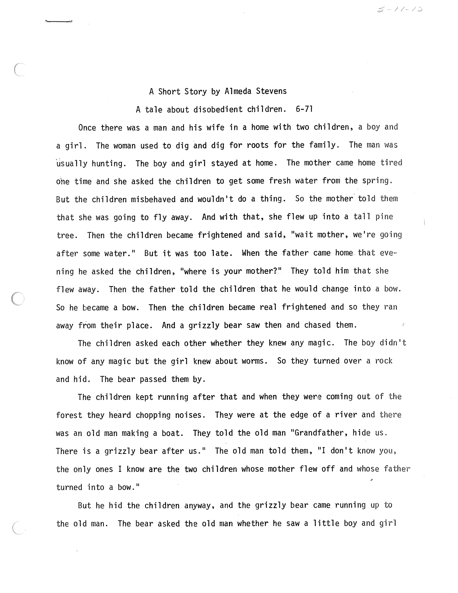
A tale about disobedient children. 6-71
Once there was a man and his wife in a home with two children, a boy and a girl. The woman used to dig and dig for roots for the family. The man was usually hunting. The boy and girl stayed at home. The mother came home tired one time and she asked the children to get some fresh water from the spring. But the children misbehaved and wouldn't do a thing. So the mother told them that she was going to fly away. And with that, she flew up into a tall pine tree. Then the children became frightened and said, "wait mother, we're going after some water." But it was too late. When the father came home that evening he asked the children, "where is your mother?" They told him that she flew away. Then the father told the children that he would change into a bow. So he became a bow. Then the children became real frightened and so they ran away from their place. And a grizzly bear saw them and chased them.
The children asked each other whether they knew any magic. The boy didn't know of any magic but the girl knew about worms. So they turned over a rock and hid. The bear passed them by.
The children kept running after that and when they were coming out of the forest they heard chopping noises. They were at the edge of a river and there was an old man making a boat. They told the old man "Grandfather, hide us. There is a grizzly bear after us." The old man told them, "I don't know you, the only ones I know are the two children whose mother flew off and whose father turned into a bow."
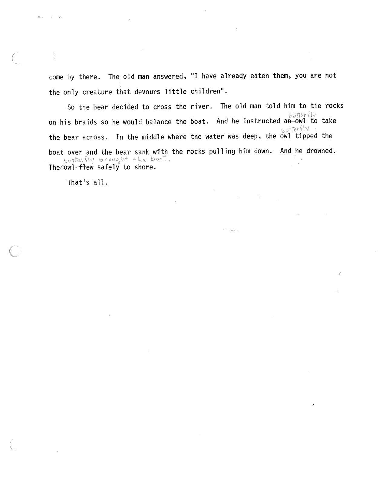
But he hid the children anyway, and the grizzly bear came running up to the old man. The bear asked the old man whether he saw a little boy and girl come by there. The old man answered, "I have already eaten them, you are not the only creature that devours little children".
So the bear decided to cross the river. The old man told him to tie rocks on his braids so he would balance the boat. And he instructed a butterfly to take the bear across. In the middle where the water was deep, the butterfly tipped the boat over and the bear sank with the rocks pulling him down. And he drowned. The butterfly brought the boat.
The owl flew safely to shore.
That's all.
Note: The original typescript has handwritten corrections changing "owl" to "butterfly" in several places, and noting "butterfly brought the boat."
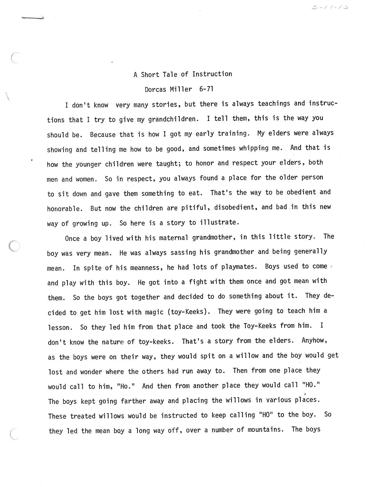
Dorcas Miller 6-71
I don't know very many stories, but there is always teachings and instructions that I try to give my grandchildren. I tell them, this is the way you should be. Because that is how I got my early training. My elders were always showing and telling me how to be good, and sometimes whipping me. And that is how the younger children were taught; to honor and respect your elders, both men and women. So in respect, you always found a place for the older person to sit down and gave them something to eat. That's the way to be obedient and honorable. But now the children are pitiful, disobedient, and bad in this new way of growing up. So here is a story to illustrate.
Once a boy lived with his maternal grandmother, in this little story. The boy was very mean. He was always sassing his grandmother and being generally mean. In spite of his meanness, he had lots of playmates. Boys used to come and play with this boy. He got into a fight with them once and got mean with them. So the boys got together and decided to do something about it. They decided to get him lost with magic (toy-Keeks). They were going to teach him a lesson. So they led him from that place and took the Toy-Keeks from him. I don't know the nature of toy-keeks. That's a story from the elders. Anyhow, as the boys were on their way, they would spit on a willow and the boy would get lost and wonder where the others had run away to. Then from one place they would call to him, "Ho." And then from another place they would call "HO." The boys kept going farther away and placing the willows in various places. These treated willows would be instructed to keep calling "HO" to the boy. So they led the mean boy a long way off, over a number of mountains. The boys
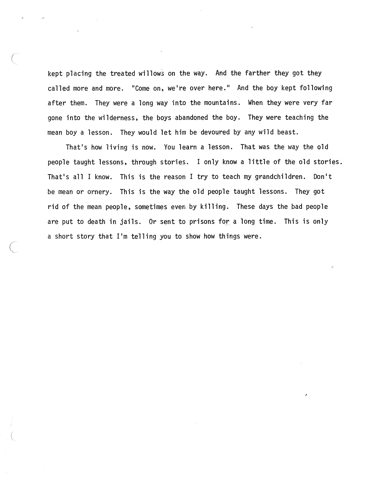
kept placing the treated willows on the way. And the farther they got they called more and more. "Come on, we're over here." And the boy kept following after them. They were a long way into the mountains. When they were very far gone into the wilderness, the boys abandoned the boy. They were teaching the mean boy a lesson. They would let him be devoured by any wild beast.
That's how living is now. You learn a lesson. That was the way the old people taught lessons, through stories. I only know a little of the old stories. That's all I know. This is the reason I try to teach my grandchildren. Don't be mean or ornery. This is the way the old people taught lessons. They got rid of the mean people, sometimes even by killing. These days the bad people are put to death in jails. Or sent to prisons for a long time. This is only a short story that I'm telling you to show how things were.
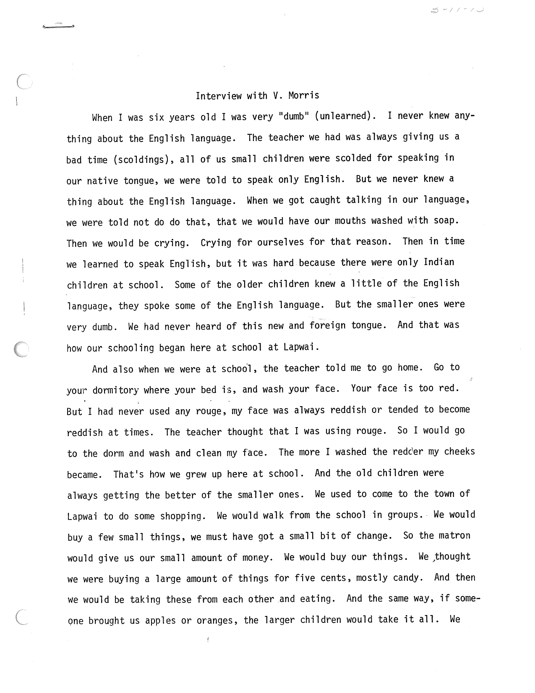
When I was six years old I was very "dumb" (unlearned). I never knew anything about the English language. The teacher we had was always giving us a bad time (scoldings), all of us small children were scolded for speaking in our native tongue, we were told to speak only English. But we never knew a thing about the English language. When we got caught talking in our language, we were told not do do that, that we would have our mouths washed with soap. Then we would be crying. Crying for ourselves for that reason. Then in time we learned to speak English, but it was hard because there were only Indian children at school. Some of the older children knew a little of the English language, they spoke some of the English language. But the smaller ones were very dumb. We had never heard of this new and foreign tongue. And that was how our schooling began here at school at Lapwai.
And also when we were at school, the teacher told me to go home. Go to your dormitory where your bed is, and wash your face. Your face is too red. But I had never used any rouge, my face was always reddish or tended to become reddish at times. The teacher thought that I was using rouge. So I would go to the dorm and wash and clean my face. The more I washed the redder my cheeks became. That's how we grew up here at school. And the old children were always getting the better of the smaller ones. We used to come to the town of Lapwai to do some shopping. We would walk from the school in groups. We would buy a few small things, we must have got a small bit of change. So the matron would give us our small amount of money. We would buy our things. We thought we were buying a large amount of things for five cents, mostly candy. And then we would be taking these from each other and eating. And the same way, if someone brought us apples or oranges, the larger children would take it all. We
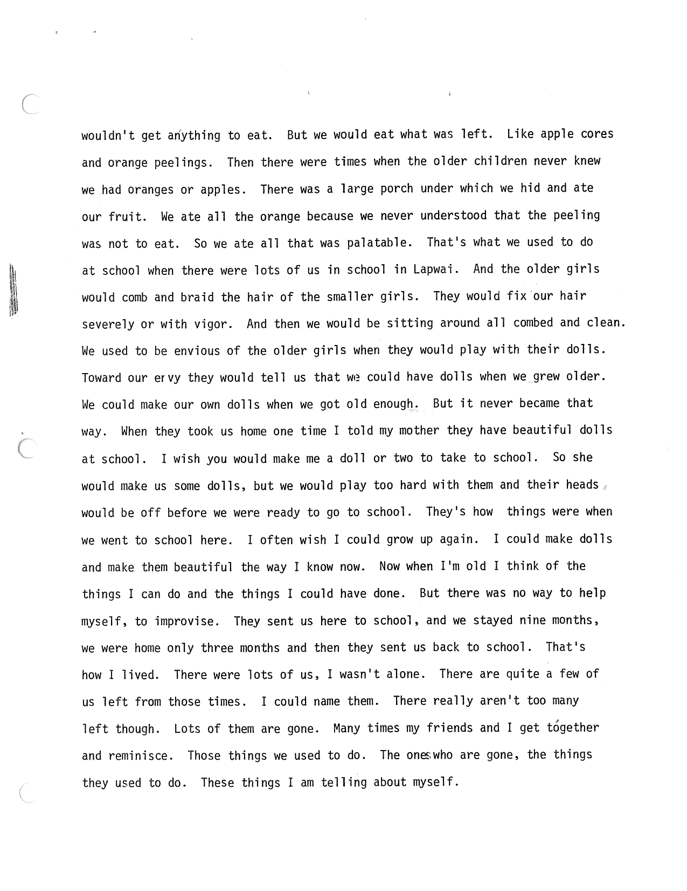
wouldn't get anything to eat. But we would eat what was left. Like apple cores and orange peelings. Then there were times when the older children never knew we had oranges or apples. There was a large porch under which we hid and ate our fruit. We ate all the orange because we never understood that the peeling was not to eat. So we ate all that was palatable. That's what we used to do at school when there were lots of us in school in Lapwai. And the older girls would comb and braid the hair of the smaller girls. They would fix our hair severely or with vigor. And then we would be sitting around all combed and clean. We used to be envious of the older girls when they would play with their dolls. Toward our envy they would tell us that we could have dolls when we grew older. We could make our own dolls when we got old enough. But it never became that way. When they took us home one time I told my mother they have beautiful dolls at school. I wish you would make me a doll or two to take to school. So she would make us some dolls, but we would play too hard with them and their heads would be off before we were ready to go to school. They's how things were when we went to school here. I often wish I could grow up again. I could make dolls and make them beautiful the way I know now. Now when I'm old I think of the things I can do and the things I could have done. But there was no way to help myself, to improvise. They sent us here to school, and we stayed nine months, we were home only three months and then they sent us back to school. That's how I lived. There were lots of us, I wasn't alone. There are quite a few of us left from those times. I could name them. There really aren't too many left though. Lots of them are gone. Many times my friends and I get together and reminisce. Those things we used to do. The ones who are gone, the things they used to do. These things I am telling about myself.
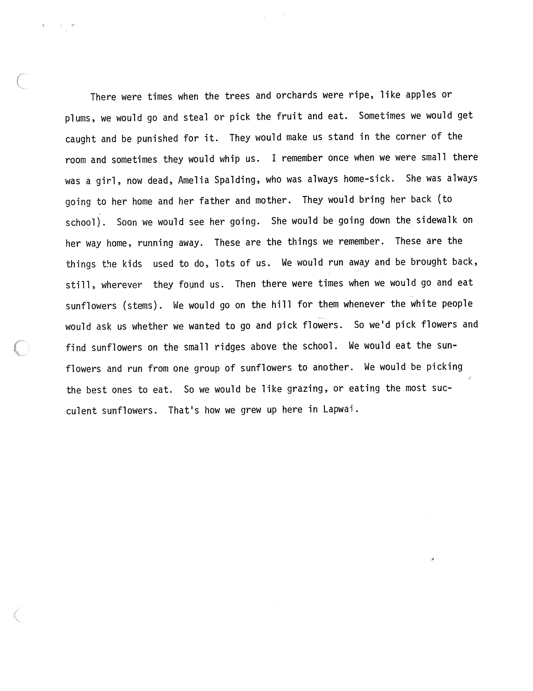
There were times when the trees and orchards were ripe, like apples or plums, we would go and steal or pick the fruit and eat. Sometimes we would get caught and be punished for it. They would make us stand in the corner of the room and sometimes they would whip us. I remember once when we were small there was a girl, now dead, Amelia Spalding, who was always home-sick. She was always going to her home and her father and mother. They would bring her back (to school). Soon we would see her going. She would be going down the sidewalk on her way home, running away. These are the things we remember. These are the things the kids used to do, lots of us. We would run away and be brought back, still, wherever they found us. Then there were times when we would go and eat sunflowers (stems). We would go on the hill for them whenever the white people would ask us whether we wanted to go and pick flowers. So we'd pick flowers and find sunflowers on the small ridges above the school. We would eat the sunflowers and run from one group of sunflowers to another. We would be picking the best ones to eat. So we would be like grazing, or eating the most succulent sunflowers. That's how we grew up here in Lapwai.
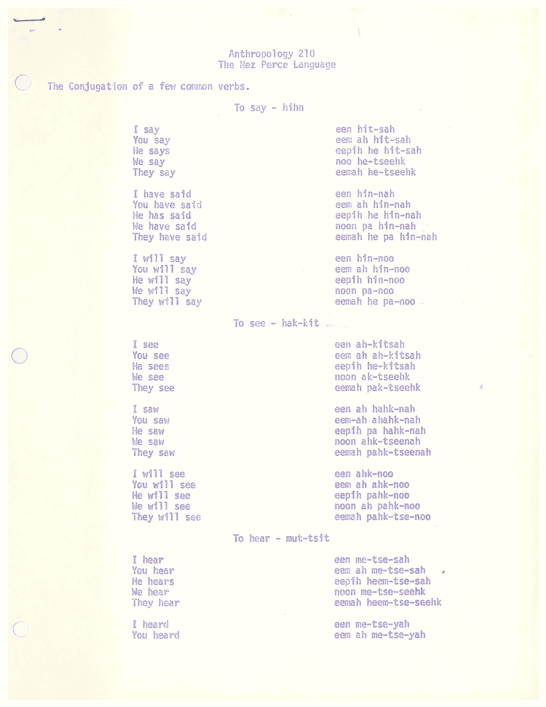
The Conjugation of a few common verbs.
To say – hitm
I say — een hit-sah
You say — eem ah hit-sah
He says — eepih he hit-sah
We say — noon he-taseek
They say — eemah he-taseek
I have said — een hit-eeh
You have said — eem ah hie-eeh
He has said — eepih he hit-eeh
We have said — moo pa hit-eeh
They have said — eemah he ah hit-eeh
I will say — een hit-noo
You will say — eem ah hit-noo
He will say — eepih hie-noo
We will say — noon pe-noo
They will say — eemah he pa-noo
To see – hak-ikt
I see — een ah-iitsah
You see — eem ah ah-iitsah
He sees — eepih he-iitsah
We see — noon ah-iiseek
They see — eemah hak-liiseek
I saw — een ah hak-eeh
You saw — eem ah ahakk-eeh
He saw — eepih hak-iit-eeh
We saw — noon ah-iiseeak
They saw — eemah pahk-iiseemah
I will see — een ahk-noo
You will see — eem ah ahk-noo
He will see — eepih pahk-noo
We will see — noon ah pahk-noo
They will see — eemah pahk-iis-noo
To hear – mait-taht
I hear — een me-tse-sah
You hear — eem ah me-tse-sah
He hears — eepih heem-tse-sah
We hear — noon me-tse-seeahk
They hear — eemah heem-tse-seemk
I heard — een me-tse-yah
You heard — eem ah me-tse-yah
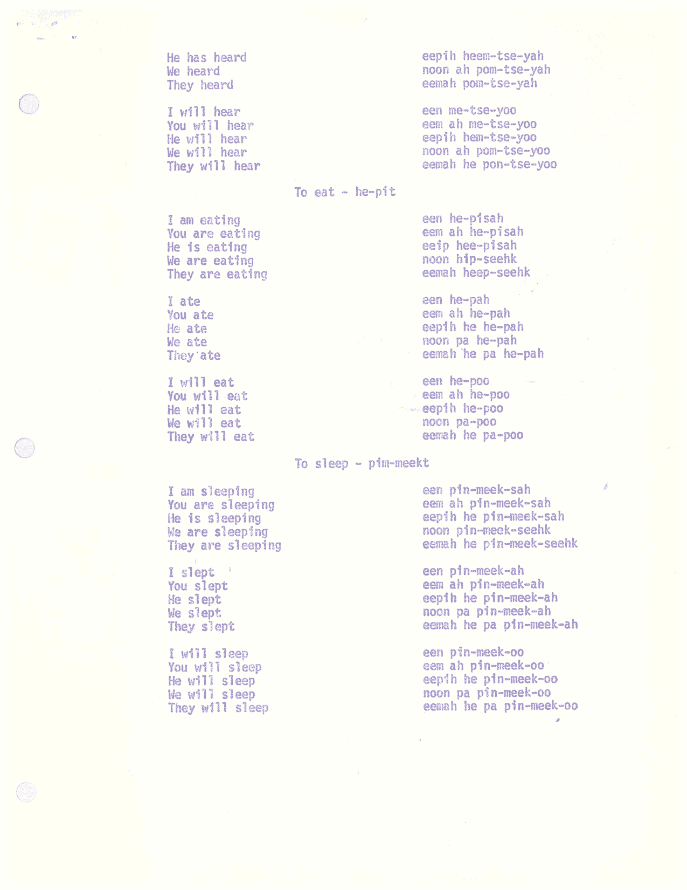
He has heard — eepih heem-tse-yah
We heard — noon ah pom-tse-yah
They heard — eemah pom-tse-yah
I will hear — een me-tse-yoo
You will hear — eem ah me-tse-yoo
He will hear — eepih hem-tse-yoo
We will hear — noon ah pom-tse-yoo
They will hear — eemah he pon-tse-yoo
To eat – he-pit
I am eating — een he-pisah
You are eating — eem ah he-pisah
He is eating — eeip hee-pisah
We are eating — noon hip-seehk
They are eating — eemah heep-seehk
I ate — een he-pah
You ate — eem ah he-pah
He ate — eepih he he-pah
We ate — noon pa he-pah
They ate — eemah he pa he-pah
I will eat — een he-poo
You will eat — eem ah he-poo
He will eat — eepih he-poo
We will eat — noon pa-poo
They will eat — eemah he pa-poo
To sleep – pim-meekt
I am sleeping — een pin-meek-sah
You are sleeping — eem ah pin-meek-sah
He is sleeping — eepih he pin-meek-sah
We are sleeping — noon pin-meek-seehk
They are sleeping — eemah he pin-meek-seehk
I slept — een pin-meek-ah
You slept — eem ah pin-meek-ah
He slept — eepih he pin-meek-ah
We slept — noon pa pin-meek-ah
They slept — eemah he pa pin-meek-ah
I will sleep — een pin-meek-oo
You will sleep — eem ah pin-meek-oo
He will sleep — eepih he pin-meek-oo
We will sleep — noon pa pin-meek-oo
They will sleep — eemah he pa pin-meek-oo
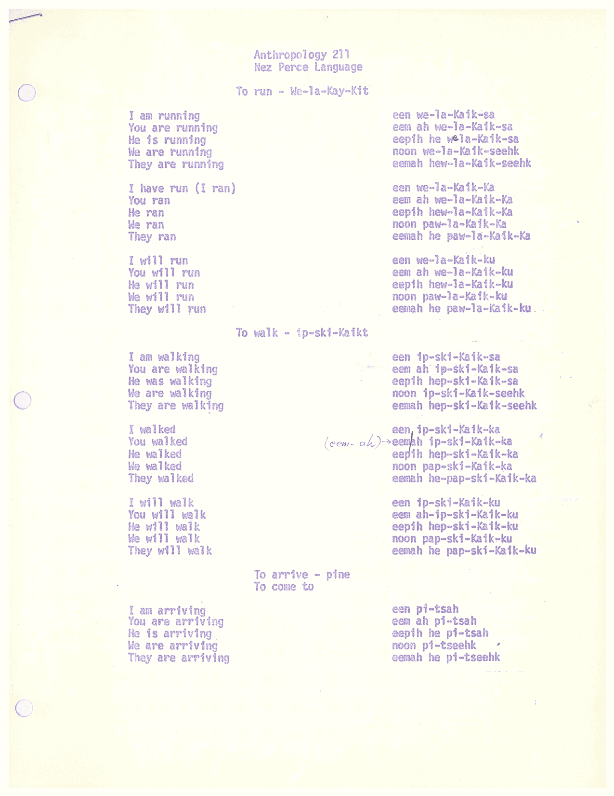
To run – we-la-tay-kit
I am running — een we-la-taht-sa
You are running — eem ah we-la-taht-sa
He is running — eepih he we-la-taht-sa
We are running — noon we-la-tahi-seehk
They are running — eemah hee-la-tahi-seehk
I have run — een we-la-taht-sa
You ran (I ran) — eem ah we-la-taht-sa
He ran — eepih hee-la-taht-sa
We ran — noon pe-la-taht-sa
They ran — eemah he pee-la-taht-sa
I will run — een we-la-te-ku
You will run — eem ah we-la-taht-ku
He will run — eepih hee-la-taht-ku
We will run — noon pee-la-taht-ku
They will run — eemah he pee-la-taht-ku
To walk – ip-aht-ahkit
I am walking — een ip-aht-aht-sa
You are walking — eem ah ip-aht-aht-sa
He was walking — eepih hep-aht-aht-sa
We are walking — noon ip-aht-tahi-seehk
They are walking — eemah hep-aht-aht-tahi-seehk
I walked — een ip-aht-ah-ta
You walked (was ...) — eemah ip-aht-aht-sa
He walked — eepih hep-aht-aht-sa
We walked — noon pep-aht-aht-sa
They walked — eemah he-pep-aht-aht-sa
I will walk — een ip-aht-taht-ku
You will walk — eem ah ip-aht-taht-ku
He will walk — eepih hep-aht-aht-ku
We will walk — noon pep-aht-taht-ku
They will walk — eemah he pep-aht-taht-ko
To arrive – piee (to come to)
I am arriving — een pi-taah
You are arriving — eem ah pi-taah
He is arriving — eepih he pi-taah
We are arriving — noon pi-tseehk
They are arriving — eemah he pi-tseehk
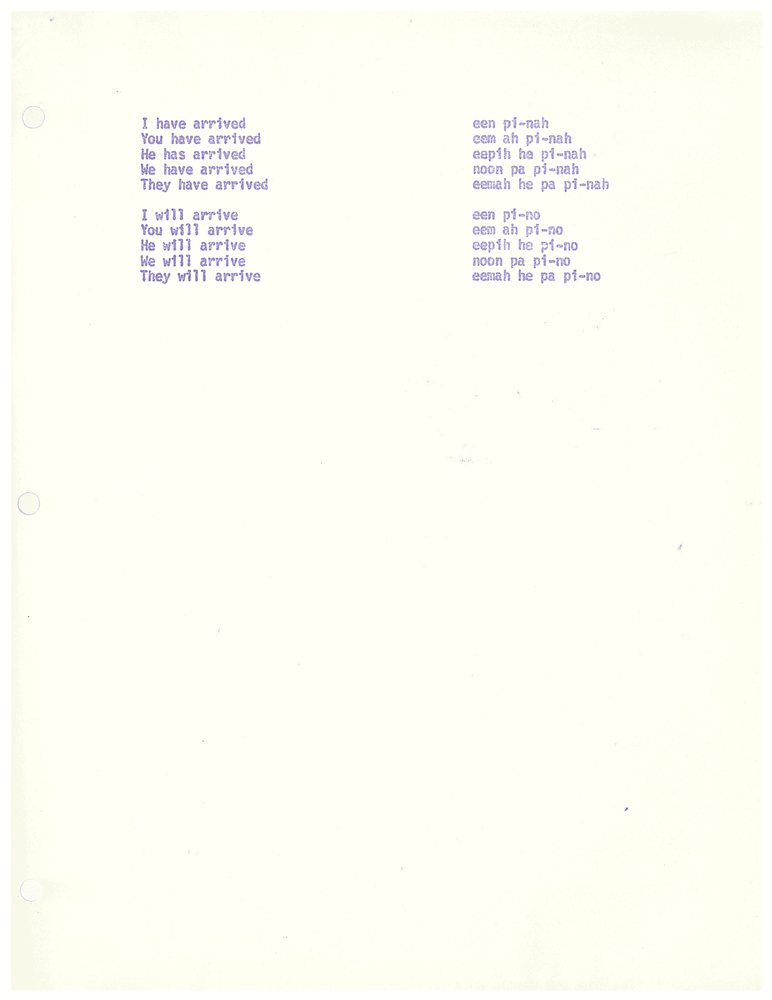
I have arrived — een pi-nah
You have arrived — eem ah pi-nah
He has arrived — eepih he pi-nah
We have arrived — noon pa pi-nah
They have arrived — eemah he pa pi-nah
I will arrive — een pi-no
You will arrive — eem ah pi-no
He will arrive — eepih he pi-no
We will arrive — noon pa pi-no
They will arrive — eemah he pa pi-no
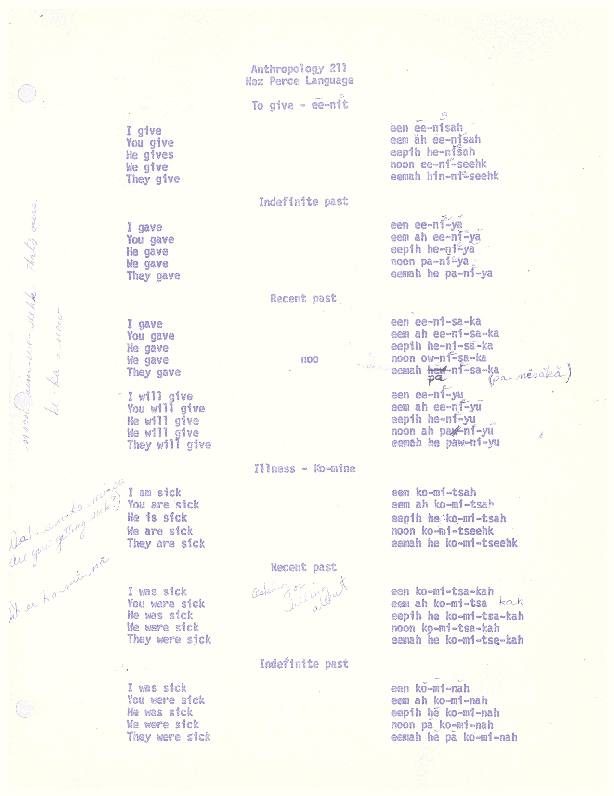
To give – ee-nit
I give — een ee-nit
You give — eem ah ee-nit
He gives — eepih hee-tieh
We give — noon ee-nit-seemk
They give — eemah hie-eh-seemhk
Indefinite past
I gave — een ah ee-ni-ye
You gave — eem ah ee-ni-ye
He gave — eepih he-ni-ye
We gave — noon pe-iyq
They gave — eemah he pa-ni-ye
Recent past
I gave — een ee-ni-sa-ha
You gave — eem ah ee-ni-sa-ha
He gave — eepih hee-ni-sa-ha (noo)
We gave — noon ee-ni-pa-ha
They gave — eemah eeni-sa-ha
I will give — een ee-niy
You will give — eem ah ee-niy
He will give — eepih he-niy
We will give — noon pa-iy
They will give — eemah he pa-niy
Illness – Ko-mine
I am sick — een ko-mi-tsah
You are sick — eem ah ko-mi-tah
He is sick — eepih he ko-mi-tsah
We are sick — noon ko-mi-tseehk
They are sick — eemah he ko-mi-tseehk
Recent Past
I was sick — een ko-mi-tsa-hah
You were sick — eem ah ko-mi-tsa-[unclear]-ha
He was sick — eepih he ko-mi-tsa-hah
We were sick — noon ko-mi-tsa-hah
They were sick — eemah he ko-mi-tsa-hah
Indefinite past
I was sick — een ko-mi-nah
You were sick — eem ah ko-mi-nah
He was sick — eepih he ko-mi-nah
We were sick — noon pa ko-mi-nah
They were sick — eemah he pa ko-mi-nah
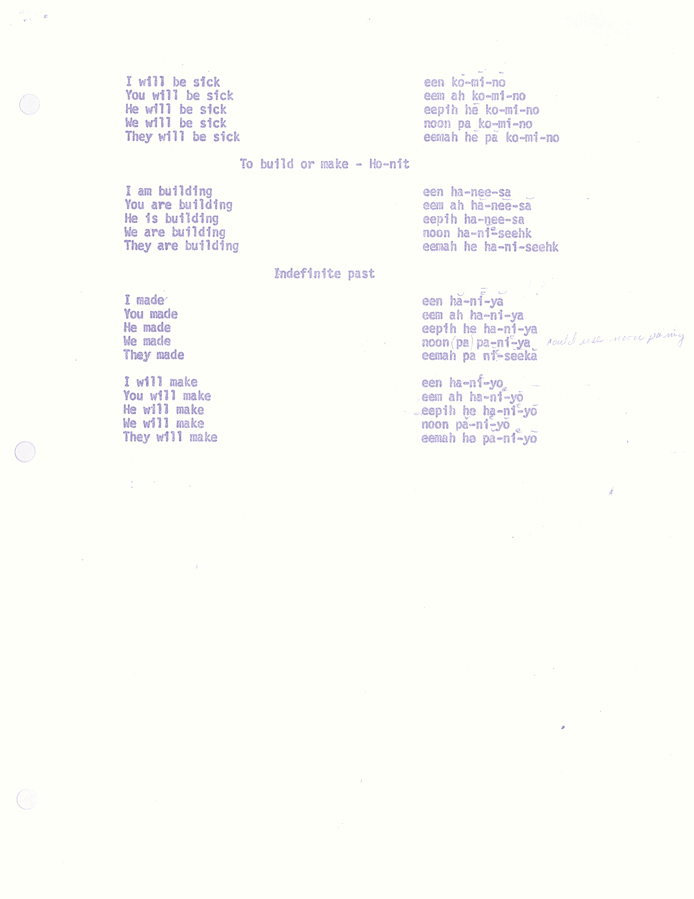
I will be sick — een ko-mi-no
You will be sick — eem ah ko-mi-no
He will be sick — eepih he ko-mi-no
We will be sick — noon pa ko-mi-no
They will be sick — eemah he pa ko-mi-no
To build or make – Ho-nit
I am building — een ha-nee-sa
You are building — eem ah ha-nee-sa
He is building — eepih ha-nee-sa
We are building — noon ha-ni-seehk
They are building — eemah he ha-ni-seehk
Indefinite past
I made — een ha-ni-ya
You made — eem ah ha-ni-ya
He made — eepih he ha-ni-ya
We made — noon (pa) pa-ni-ya
They made — eemah pa ni-seeka
Note: handwritten annotation reads "would use more passing"
I will make — een ha-ni-yo
You will make — eem ah ha-ni-yo
He will make — eepih he ha-ni-yo
We will make — noon pa-ni-yo
They will make — eemah he pa-ni-yo
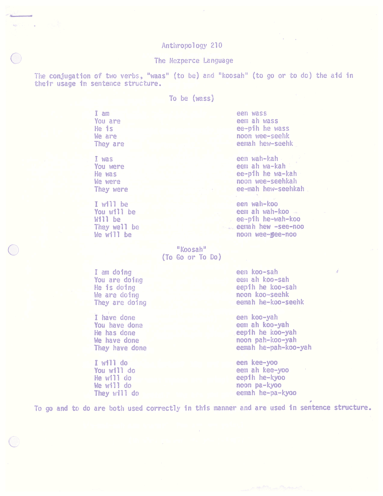
The conjugation of two verbs, "waas" (to be) and "koosah" (to go or to do) the aid in their usage in sentence structure.
To be (wass)
I am — een wass
You are — eem ah wass
He is — ee-pih he wass
We are — noon wee-seehk
They are — eemah hew-seehk
I was — een wah-kah
You were — eem ah wa-kah
He was — ee-pih he wa-kah
We were — noon wee-seehkah
They were — ee-mah hew-seehkah
I will be — een wah-koo
You will be — eem ah wah-koo
Will be — ee-pih he-wah-koo
They well be — eemah hew -see-noo
We will be — noon wee-gee-noo
"Koosah" (To Go or To Do)
I am doing — een koo-sah
You are doing — eem ah koo-sah
He is doing — eepih he koo-sah
We are doing — noon koo-seehk
They are doing — eemah he-koo-seehk
I have done — een koo-yah
You have done — eem ah koo-yah
He has done — eepih he koo-yah
We have done — noon pah-koo-yah
They have done — eemah he-pah-koo-yah
I will do — een kee-yoo
You will do — eem ah kee-yoo
He will do — eepih he-kyoo
We will do — noon pa-kyoo
They will do — eemah he-pa-kyoo
To go and to do are both used correctly in this manner and are used in sentence structure.
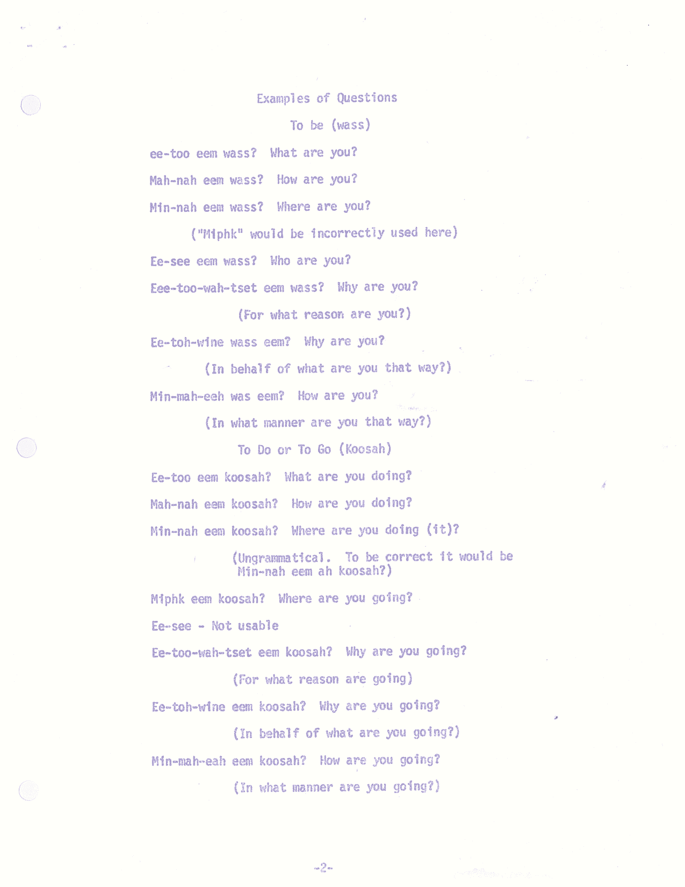
To be (wass)
ee-too eem wass? — What are you?
Mah-nah eem wass? — How are you?
Min-nah eem wass? — Where are you?
("Miphk" would be incorrectly used here)
Ee-see eem wass? — Who are you?
Eee-too-wah-tset eem wass? — Why are you?
(For what reason are you?)
Ee-toh-wine wass eem? — Why are you?
(In behalf of what are you that way?)
Min-mah-eeh was eem? — How are you?
(In what manner are you that way?)
To Do or To Go (Koosah)
Ee-too eem koosah? — What are you doing?
Mah-nah eem koosah? — How are you doing?
Min-nah eem koosah? — Where are you doing (it)?
(Ungrammatical. To be correct it would be Min-nah eem ah koosah?)
Miphk eem koosah? — Where are you going?
Ee-see – Not usable
Ee-too-wah-tset eem koosah? — Why are you going?
(For what reason are going)
Ee-toh-wine eem koosah? — Why are you going?
(In behalf of what are you going?)
Min-mah-eeh eem koosah? — How are you going?
(In what manner are you going?)
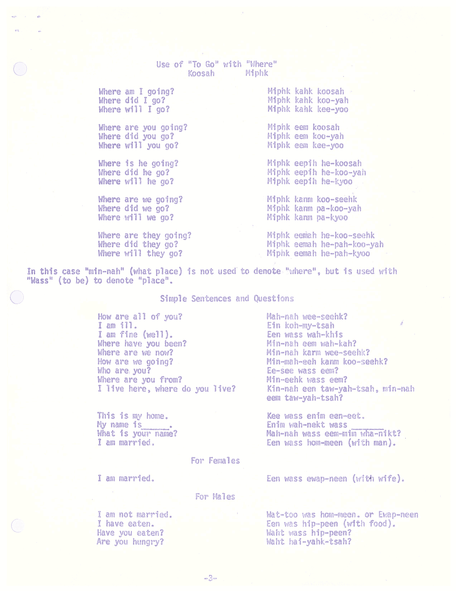
Where am I going? — Miphk kahk koosah
Where did I go? — Miphk kahk koo-yah
Where will I go? — Miphk kahk kee-yoo
Where are you going? — Miphk eem koosah
Where did you go? — Miphk eem koo-yah
Where will you go? — Miphk eem kee-yoo
Where is he going? — Miphk eepih he-koosah
Where did he go? — Miphk eepih he-koo-yah
Where will he go? — Miphk eepih he-kyoo
Where are we going? — Miphk kanm koo-seehk
Where did we go? — Miphk kanm pa-koo-yah
Where will we go? — Miphk kanm pa-kyoo
Where are they going? — Miphk eemah he-koo-seehk
Where did they go? — Miphk eemah he-pah-koo-yah
Where will they go? — Miphk eemah he-pah-kyoo
In this case "min-nah" (what place) is not used to denote "where", but is used with "Wass" (to be) to denote "place".
How are all of you? — Mah-nah wee-seehk?
I am ill. — Ein koh-my-tsah
I am fine (well). — Een wass wah-khis
Where have you been? — Min-nah eem wah-kah?
Where are we now? — Min-nah karm wee-seehk?
How are we going? — Min-mah-eeh kanm koo-seehk?
Who are you? — Ee-see wass eem?
Where are you from? — Min-eehk wass eem?
I live here, where do you live? — Kin-nah een taw-yah-tsah, min-nah eem taw-yah-tsah?
This is my home. — Kee wass enim een-eet.
My name is ___. — Enim wah-nekt wass ___
What is your name? — Mah-nah wass eem-mim wha-nikt?
I am married. — Een wass hom-meen (with man).
For Females
I am married. — Een wass ewap-neen (with wife).
For Males
I am not married. — Wat-too was hom-meen. or Ewap-neen
I have eaten. — Een was hip-peen (with food).
Have you eaten? — Waht wass hip-peen?
Are you hungry? — Waht hai-yahk-tsah?
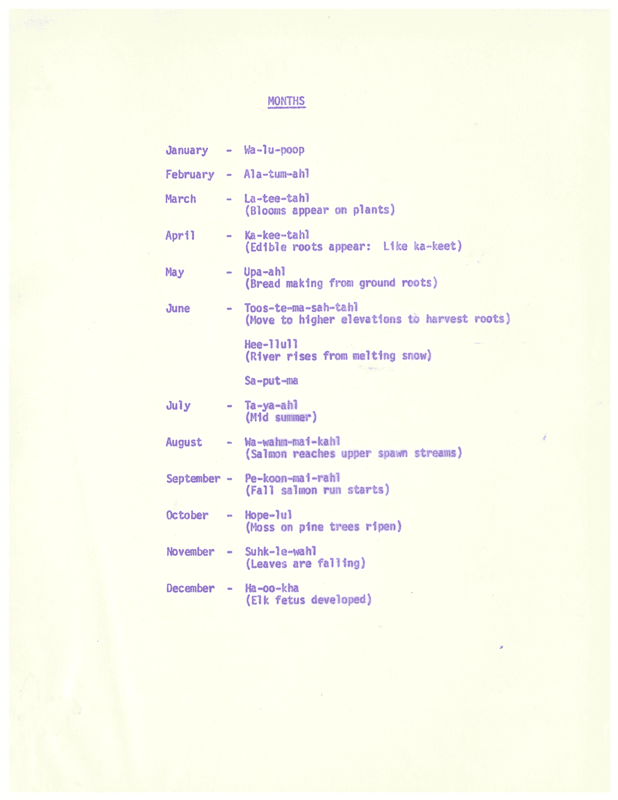
January — Ha-lu-oosp
February — Ala-tum-ahl
March — La-tom-tahl (bloom appear on plants)
April — Ka-koo-tahl (Edible roots appear; like ka-keet)
May — Ooe-ahl (Bread making from ground roots)
June — Toos-te-me-ah-tahl (Move to higher elevations to harvest roots)
Hee-liall (River rises from melting snow)
ka-yet-ee
July — Te-yot-ahl (Mid summer)
August — We-washa-eel-kah (Salmon reaches upper spawn streams)
September — Pa-koon-eel-rehl (Fall salmon run starts)
October — Hepe-hil (Haze on pine trees rises)
November — Sahk-lu-wahl (Leaves are falling)
December — Ha-oo-iha (Elk fetus develops)
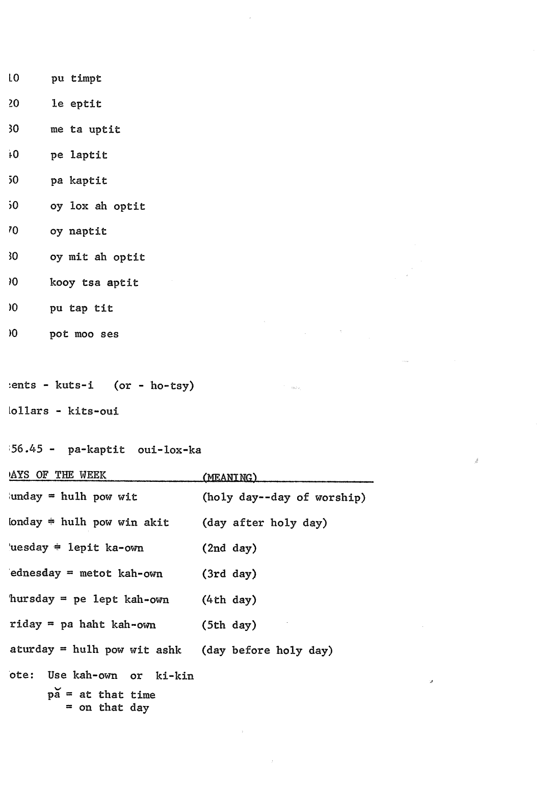
10 — pu timpt
20 — le eptit
30 — me ta uptit
40 — pe laptit
50 — pa kaptit
60 — oy lox ah optit
70 — oy naptit
80 — oy mit ah optit
90 — kooy tsa aptit
100 — pu tap tit
1000 — pot moo ses
Cents — kuts-i (or ho-tsy)
Dollars — kits-oui
$56.45 — pa-kaptit oui-lox-ka
Sunday = hulh pow wit (holy day—day of worship)
Monday = hulh pow win akit (day after holy day)
Tuesday = lepit ka-own (2nd day)
Wednesday = metot kah-own (3rd day)
Thursday = pe lept kah-own (4th day)
Friday = pa haht kah-own (5th day)
Saturday = hulh pow wit ashk (day before holy day)
Note: Use kah-own or ki-kin. pa = at that time = on that day
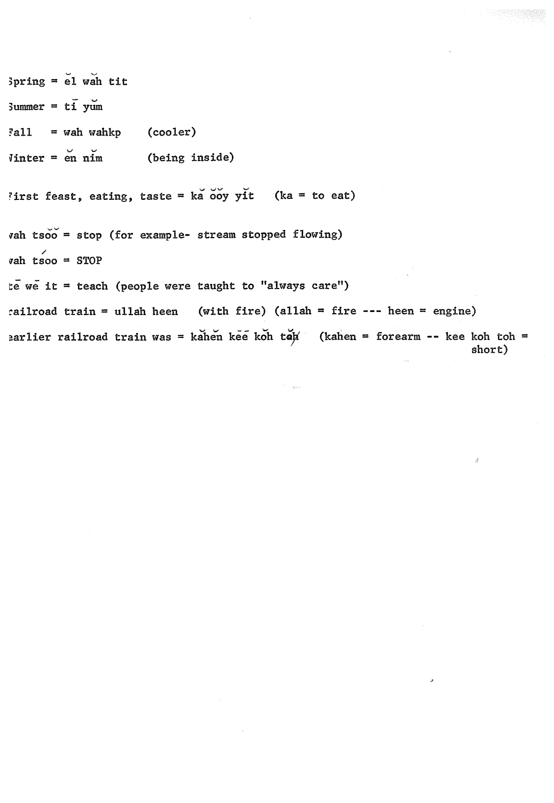
Spring = el wah tit
Summer = ti yum
Fall = wah wahkp (cooler)
Winter = en nim (being inside)
First feast, eating, taste = ka ooy yit (ka = to eat)
vah tsoo = stop (for example— stream stopped flowing)
vah tsoo = STOP
te we it = teach (people were taught to "always care")
railroad train = ullah heen (with fire) (allah = fire — heen = engine)
earlier railroad train was = kahen kee koh toh (kahen = forearm — kee koh toh = short)